CHƯƠNG 9 SUY LUẬN TRONG LOGIC BẬC NHẤT
Trong chương này, chúng ta định nghĩa các quy trình hiệu quả để trả lời các câu hỏi được đặt ra
trong logic bậc nhất.
Trong chương này, chúng ta sẽ mô tả các thuật toán có thể trả lời bất kỳ câu hỏi logic bậc nhất nào
có thể trả lời được. Mục 9.1 giới thiệu các quy tắc suy luận cho các lượng từ và chỉ ra cách để rút
gọn suy luận bậc nhất thành suy luận mệnh đề, mặc dù có thể tốn kém. Mục 9.2 mô tả cách sử
dụng phép hợp nhất (unification) để xây dựng các quy tắc suy luận hoạt động trực tiếp với các câu
logic bậc nhất. Sau đó, chúng ta sẽ thảo luận về ba nhóm thuật toán suy luận bậc nhất chính: suy
luận tiến (forward chaining) (Mục 9.3), suy luận lùi (backward chaining) (Mục 9.4), và chứng
minh định lý dựa trên phép giải (resolution-based theorem proving) (Mục 9.5).
Suy luận Mệnh đề so với Suy luận Bậc nhất
Trong phần này, chúng ta sẽ giới thiệu các quy tắc suy luận cho lượng từ và chỉ ra cách giảm suy
luận bậc nhất về suy luận mệnh đề, mặc dù có thể tốn kém nhiều chi phí.
Một cách để thực hiện suy luận bậc nhất là chuyển đổi cơ sở tri thức bậc nhất sang logic mệnh đề
và sử dụng suy luận mệnh đề, vốn đã được biết đến cách thực hiện. Bước đầu tiên là loại bỏ các
lượng từ phổ dụng. Ví dụ, giả sử cơ sở tri thức của chúng ta chứa tiên đề dân gian tiêu chuẩn rằng
tất cả các vị vua tham lam đều độc ác:
∀𝑥 𝐾𝑖𝑛𝑔(𝑥) ∧ 𝐺𝑟𝑒𝑒𝑑𝑦(𝑥) ⇒ 𝐸𝑣𝑖𝑙(𝑥).
Từ đó, chúng ta có thể suy ra bất kỳ câu nào sau đây:
𝐾𝑖𝑛𝑔(𝐽𝑜ℎ𝑛) ∧ 𝐺𝑟𝑒𝑒𝑑𝑦(𝐽𝑜ℎ𝑛) ⇒ 𝐸𝑣𝑖𝑙(𝐽𝑜ℎ𝑛)
𝐾𝑖𝑛𝑔(𝑅𝑖𝑐ℎ𝑎𝑟𝑑) ∧ 𝐺𝑟𝑒𝑒𝑑𝑦(𝑅𝑖𝑐ℎ𝑎𝑟𝑑) ⇒ 𝐸𝑣𝑖𝑙(𝑅𝑖𝑐ℎ𝑎𝑟𝑑)
𝐾𝑖𝑛𝑔(𝐹𝑎𝑡ℎ𝑒𝑟(𝐽𝑜ℎ𝑛)) ∧ 𝐺𝑟𝑒𝑒𝑑𝑦(𝐹𝑎𝑡ℎ𝑒𝑟(𝐽𝑜ℎ𝑛)) ⇒ 𝐸𝑣𝑖𝑙(𝐹𝑎𝑡ℎ𝑒𝑟(𝐽𝑜ℎ𝑛)).
Nói chung, quy tắc Khởi tạo Phổ dụng (UI) cho biết chúng ta có thể suy ra bất kỳ câu nào thu
được bằng cách thay thế một hạng tử nền (một hạng tử không chứa biến) cho một biến được lượng
từ phổ dụng. 1
1 Không nên nhầm lẫn các phép thay thế này với các diễn giải mở rộng được sử dụng để định nghĩa
ngữ nghĩa của lượng từ trong Mục 8.2.6. Phép thay thế thay một biến bằng một hạng tử (một phần
của cú pháp) để tạo ra một câu mới, trong khi một diễn giải ánh xạ một biến thành một đối tượng
trong miền.
Để viết ra quy tắc suy luận một cách chính thức, chúng ta sử dụng khái niệm phép thay thế đã
được giới thiệu trong Mục 8.3. Ký hiệu là kết quả của việc áp dụng phép thay thế 𝜃 vào câu 𝛼 .
Khi đó, quy tắc được viết như sau:
cho bất kỳ biến 𝑣 và hạng tử nền 𝑔 . Ví dụ, ba câu được đưa ra trước đó thu được bằng các phép
thay thế {𝑥/𝐽𝑜ℎ𝑛} , {𝑥/𝑅𝑖𝑐ℎ𝑎𝑟𝑑} , và {𝑥/𝐹𝑎𝑡ℎ𝑒𝑟(𝐽𝑜ℎ𝑛)} .
Tương tự, quy tắc Khởi tạo Tồn tại thay thế một biến được lượng từ tồn tại bằng một ký hiệu
hằng mới duy nhất. Phát biểu chính thức như sau: với bất kỳ câu 𝛼 , biến 𝑣 , và ký hiệu hằng 𝑘
không xuất hiện ở nơi nào khác trong cơ sở tri thức,
Ví dụ, từ câu
chúng ta có thể suy ra câu
∃𝑥 𝐶𝑟𝑜𝑤𝑛(𝑥) ∧ 𝑂𝑛𝐻𝑒𝑎𝑑(𝑥, 𝐽𝑜ℎ𝑛)
𝐶𝑟𝑜𝑤𝑛(𝐶1) ∧ 𝑂𝑛𝐻𝑒𝑎𝑑(𝐶1, 𝐽𝑜ℎ𝑛)
miễn là 𝐶1 không xuất hiện ở nơi nào khác trong cơ sở tri thức. Về cơ bản, câu tồn tại nói rằng có
một số đối tượng thỏa mãn một điều kiện, và việc áp dụng quy tắc khởi tạo tồn tại chỉ đơn giản là
đặt tên cho đối tượng đó. Tất nhiên, tên đó không được thuộc về một đối tượng khác. Toán học
cung cấp một ví dụ hay: giả sử chúng ta phát hiện ra rằng có một số lớn hơn một chút so với
2.71828 và thỏa mãn phương trình 𝑑(𝑥𝑦)/𝑑𝑦 = 𝑥𝑦 cho 𝑥 . Chúng ta có thể đặt tên cho số này là
𝑒 , nhưng sẽ là sai lầm nếu đặt tên nó bằng một đối tượng đã tồn tại, chẳng hạn như 𝜋 . Trong
logic, tên mới này được gọi là hằng Skolem.
Trong khi Khởi tạo Phổ dụng có thể được áp dụng nhiều lần cho cùng một tiên đề để tạo ra nhiều
hệ quả khác nhau, Khởi tạo Tồn tại chỉ cần được áp dụng một lần, và sau đó câu được lượng từ
tồn tại có thể được loại bỏ. Ví dụ, chúng ta không cần ∃𝑥 𝐾𝑖𝑙𝑙(𝑥, 𝑉𝑖𝑐𝑡𝑖𝑚) một khi đã thêm câu
𝐾𝑖𝑙𝑙(𝑀𝑢𝑟𝑑𝑒𝑟𝑒𝑟, 𝑉𝑖𝑐𝑡𝑖𝑚) .
Giảm về Suy luận Mệnh đề
Bây giờ chúng ta sẽ chỉ ra cách chuyển đổi bất kỳ cơ sở tri thức bậc nhất nào thành một cơ sở tri
thức mệnh đề. Ý tưởng đầu tiên là, giống như một câu tồn tại có thể được thay thế bằng một khởi
tạo, một câu phổ dụng có thể được thay thế bằng tập hợp tất cả các khởi tạo có thể. Ví dụ, giả sử
cơ sở tri thức của chúng ta chỉ chứa các câu sau:
∀𝑥 𝐾𝑖𝑛𝑔(𝑥) ∧ 𝐺𝑟𝑒𝑒𝑑𝑦(𝑥) ⇒ 𝐸𝑣𝑖𝑙(𝑥)
𝐾𝑖𝑛𝑔(𝐽𝑜ℎ𝑛)
𝐺𝑟𝑒𝑒𝑑𝑦(𝐽𝑜ℎ𝑛)
𝐵𝑟𝑜𝑡ℎ𝑒𝑟(𝑅𝑖𝑐ℎ𝑎𝑟𝑑, 𝐽𝑜ℎ𝑛).
và các đối tượng duy nhất là John và Richard. Chúng ta áp dụng UI cho câu đầu tiên bằng tất cả
các phép thay thế có thể, {𝑥/𝐽𝑜ℎ𝑛} và {𝑥/𝑅𝑖𝑐ℎ𝑎𝑟𝑑} . Chúng ta thu được:
𝐾𝑖𝑛𝑔(𝐽𝑜ℎ𝑛) ∧ 𝐺𝑟𝑒𝑒𝑑𝑦(𝐽𝑜ℎ𝑛) ⇒ 𝐸𝑣𝑖𝑙(𝐽𝑜ℎ𝑛)
𝐾𝑖𝑛𝑔(𝑅𝑖𝑐ℎ𝑎𝑟𝑑) ∧ 𝐺𝑟𝑒𝑒𝑑𝑦(𝑅𝑖𝑐ℎ𝑎𝑟𝑑) ⇒ 𝐸𝑣𝑖𝑙(𝑅𝑖𝑐ℎ𝑎𝑟𝑑).
Tiếp theo, thay thế các câu nguyên tử nền, chẳng hạn như 𝐾𝑖𝑛𝑔(𝐽𝑜ℎ𝑛) , bằng các ký hiệu mệnh
đề, chẳng hạn như 𝐽𝑜ℎ𝑛𝐼𝑠𝐾𝑖𝑛𝑔 . Cuối cùng, áp dụng bất kỳ thuật toán mệnh đề hoàn chỉnh nào
trong Chương 7 để thu được các kết luận như 𝐽𝑜ℎ𝑛𝐼𝑠𝐸𝑣𝑖𝑙 , tương đương với 𝐸𝑣𝑖𝑙(𝐽𝑜ℎ𝑛) .
Kỹ thuật mệnh đề hóa này có thể được tổng quát hóa hoàn toàn, như chúng ta sẽ chỉ ra trong Mục
9.5. Tuy nhiên, có một vấn đề: khi cơ sở tri thức bao gồm một ký hiệu hàm, tập hợp các phép thay
thế hạng tử nền có thể là vô hạn! Ví dụ, nếu cơ sở tri thức đề cập đến ký hiệu Father, thì vô số các
hạng tử lồng nhau như 𝐹𝑎𝑡ℎ𝑒𝑟(𝐹𝑎𝑡ℎ𝑒𝑟(𝐹𝑎𝑡ℎ𝑒𝑟(𝐽𝑜ℎ𝑛))) có thể được tạo ra.
May mắn thay, có một định lý nổi tiếng của Jacques Herbrand (1930) nói rằng nếu một câu được
suy ra từ cơ sở tri thức bậc nhất ban đầu, thì có một chứng minh liên quan chỉ đến một tập hợp con
hữu hạn của cơ sở tri thức đã được mệnh đề hóa. Vì bất kỳ tập hợp con nào như vậy đều có độ sâu
lồng nhau tối đa trong số các hạng tử nền của nó, chúng ta có thể tìm thấy tập hợp con đó bằng
cách đầu tiên tạo ra tất cả các khởi tạo với các ký hiệu hằng (Richard và John), sau đó tất cả các
hạng tử có độ sâu 1 ( 𝐹𝑎𝑡ℎ𝑒𝑟(𝑅𝑖𝑐ℎ𝑎𝑟𝑑) và 𝐹𝑎𝑡ℎ𝑒𝑟(𝐽𝑜ℎ𝑛) ), tiếp theo là tất cả các hạng tử có độ
sâu 2, và cứ tiếp tục như vậy, cho đến khi chúng ta có thể xây dựng một chứng minh mệnh đề của
câu được suy ra.
Chúng ta đã phác thảo một cách tiếp cận để suy luận bậc nhất thông qua mệnh đề hóa, đây là một
cách tiếp cận hoàn chỉnh—nghĩa là bất kỳ câu nào được suy ra đều có thể được chứng minh. Đây
là một thành tựu lớn, vì không gian của các mô hình có thể là vô hạn. Mặt khác, chúng ta không
biết liệu câu đó có được suy ra hay không cho đến khi chứng minh hoàn tất! Điều gì sẽ xảy ra khi
câu đó không được suy ra? Chúng ta có thể biết được không? Đối với logic bậc nhất, hóa ra chúng
ta không thể. Quy trình chứng minh của chúng ta có thể tiếp tục mãi, tạo ra ngày càng nhiều hạng
tử lồng nhau sâu hơn, nhưng chúng ta sẽ không biết liệu nó có bị kẹt trong một vòng lặp vô vọng
hay chứng minh sắp xuất hiện. Điều này rất giống với bài toán dừng đối với máy Turing. Alan
Turing (1936) và Alonzo Church (1936) đều đã chứng minh, theo những cách khá khác nhau, sự
không thể tránh khỏi của tình trạng này. Câu hỏi về sự suy ra đối với logic bậc nhất là nửa quyết—nghĩa là tồn tại các thuật toán có thể trả lời “có” cho mọi câu được suy ra, nhưng
không tồn tại thuật toán nào có thể trả lời “không” cho mọi câu không được suy ra.
Phép Hợp Nhất và Suy Luận Bậc Nhất
Người đọc tinh ý sẽ nhận thấy rằng phương pháp mệnh đề hóa tạo ra nhiều thể hiện không cần
thiết của các câu lượng từ hóa phổ quát. Chúng ta mong muốn một phương pháp chỉ sử dụng một
quy tắc duy nhất, suy luận rằng phép thế {𝑥/𝐽𝑜ℎ𝑛} giải quyết truy vấn 𝐸𝑣𝑖𝑙(𝑥) như sau: từ quy tắc
cho rằng những vị vua tham lam là độc ác, hãy tìm một 𝑥 sao cho 𝑥 là vua và 𝑥 tham lam, sau đó
suy ra rằng 𝑥 này độc ác. Tổng quát hơn, nếu có một phép thế 𝜃 nào đó khiến mỗi liên từ trong
tiền đề của phép kéo theo trùng khớp với các câu đã có trong cơ sở tri thức, thì chúng ta có thể
khẳng định kết luận của phép kéo theo sau khi áp dụng 𝜃 . Trong trường hợp này, phép thế 𝜃 =
{𝑥/𝐽𝑜ℎ𝑛} đạt được mục đích đó.
Giả sử thay vì biết 𝐺𝑟𝑒𝑒𝑑𝑦(𝐽𝑜ℎ𝑛) , chúng ta biết rằng mọi người đều tham lam:
∀𝑦 𝐺𝑟𝑒𝑒𝑑𝑦(𝑦).
Khi đó, chúng ta vẫn muốn kết luận rằng 𝐸𝑣𝑖𝑙(𝐽𝑜ℎ𝑛) , bởi vì chúng ta biết John là vua (theo giả
thiết) và John tham lam (vì mọi người đều tham lam). Để điều này hoạt động, chúng ta cần tìm
một phép thế cho cả các biến trong câu kéo theo và các biến trong các câu thuộc cơ sở tri thức.
Trong trường hợp này, áp dụng phép thế {𝑥/𝐽𝑜ℎ𝑛, 𝑦/𝐽𝑜ℎ𝑛} vào các tiền đề 𝐾𝑖𝑛𝑔(𝑥) và
𝐺𝑟𝑒𝑒𝑑𝑦(𝑥) cùng các câu trong cơ sở tri thức 𝐾𝑖𝑛𝑔(𝐽𝑜ℎ𝑛) và 𝐺𝑟𝑒𝑒𝑑𝑦(𝑦) sẽ khiến chúng trùng
khớp. Do đó, chúng ta có thể suy ra hệ quả của phép kéo theo.
Quá trình suy luận này có thể được mô hình hóa như một quy tắc suy luận đơn lẻ mà chúng ta gọi
là Modus Ponens Tổng quát. Đối với các câu nguyên tử 𝑝𝑖, 𝑝𝑖′ và 𝑞 , nếu tồn tại một phép thế 𝜃
sao cho SUBST(𝜃, 𝑝𝑖′) = SUBST(𝜃, 𝑝𝑖) với mọi 𝑖 , thì quy tắc được viết như sau:
𝑝1′, 𝑝2′, … , 𝑝𝑛′, (𝑝1 ∧ 𝑝2 ∧ … ∧ 𝑝𝑛 ⇒ 𝑞)
SUBST(𝜃, 𝑞)
Quy tắc này có 𝑛 + 1 tiền đề: 𝑛 câu nguyên tử 𝑝𝑖′ và một phép kéo theo. Kết luận là kết quả của
việc áp dụng phép thế 𝜃 vào hệ quả 𝑞 . Ví dụ:
𝑝1′ là 𝐾𝑖𝑛𝑔(𝐽𝑜ℎ𝑛) , 𝑝1 là 𝐾𝑖𝑛𝑔(𝑥)
𝑝2′ là 𝐺𝑟𝑒𝑒𝑑𝑦(𝑦) , 𝑝2 là 𝐺𝑟𝑒𝑒𝑑𝑦(𝑥)
𝜃 là {𝑥/𝐽𝑜ℎ𝑛, 𝑦/𝐽𝑜ℎ𝑛}
𝑞 là 𝐸𝑣𝑖𝑙(𝑥)
SUBST(𝜃, 𝑞) là 𝐸𝑣𝑖𝑙(𝐽𝑜ℎ𝑛) .
Có thể dễ dàng chứng minh rằng Modus Ponens Tổng quát là một quy tắc suy luận đúng đắn. Đầu
tiên, ta nhận thấy rằng với mọi câu 𝑝 (các biến được giả định là lượng từ hóa phổ quát) và mọi
phép thế 𝜃 , câu 𝑝 𝖼 SUBST(𝜃, 𝑝) luôn đúng theo Quy tắc Thể hiện Phổ quát. Điều này đặc biệt
đúng với 𝜃 thỏa mãn các điều kiện của Modus Ponens Tổng quát. Do đó, từ 𝑝1′, … , 𝑝𝑛′ , ta có thể
suy ra:
SUBST(𝜃, 𝑝1′) ∧ … ∧ SUBST(𝜃, 𝑝𝑛′)
Và từ phép kéo theo 𝑝1 ∧ … ∧ 𝑝𝑛 ⇒ 𝑞 , ta có thể suy ra:
SUBST(𝜃, 𝑝1) ∧ … ∧ SUBST(𝜃, 𝑝𝑛) ⇒ SUBST(𝜃, 𝑞).
Vì 𝜃 trong Modus Ponens Tổng quát được định nghĩa sao cho SUBST(𝜃, 𝑝𝑖′) = SUBST(𝜃, 𝑝𝑖)
với mọi 𝑖 , nên câu đầu tiên trong hai câu trên khớp chính xác với tiền đề của câu thứ hai. Do đó,
SUBST(𝜃, 𝑞) được suy ra bằng Modus Ponens.
Modus Ponens Tổng quát là phiên bản “nâng cao” của Modus Ponens—nó nâng Modus Ponens từ
logic mệnh đề không biến lên logic bậc nhất. Trong phần còn lại của chương này, chúng ta sẽ thấy
rằng có thể phát triển các phiên bản nâng cao của các thuật toán suy diễn tiến, suy diễn lùi và phân
giải đã được giới thiệu trong Chương 7. Ưu điểm chính của các quy tắc suy luận nâng cao so với
mệnh đề hóa là chúng chỉ thực hiện các phép thế cần thiết để cho phép các suy luận cụ thể tiến
hành.
Phép Hợp Nhất
Các quy tắc suy luận nâng cao yêu cầu tìm các phép thế khiến các biểu thức logic khác nhau trở
nên giống nhau. Quá trình này được gọi là phép hợp nhất và là một thành phần quan trọng của
tất cả các thuật toán suy luận bậc nhất. Thuật toán Hợp nhất (UNIFY) nhận hai câu và trả về một
bộ hợp nhất (một phép thế) nếu tồn tại:
UNIFY(𝑝, 𝑞) = 𝜃 với SUBST(𝜃, 𝑝) = SUBST(𝜃, 𝑞).
Hãy xem một số ví dụ về cách UNIFY hoạt động. Giả sử chúng ta có truy vấn
AskVars(𝐾𝑛𝑜𝑤𝑠(𝐽𝑜ℎ𝑛, 𝑥)) : John biết ai? Câu trả lời cho truy vấn này có thể được tìm thấy bằng
cách tìm tất cả các câu trong cơ sở tri thức hợp nhất với 𝐾𝑛𝑜𝑤𝑠(𝐽𝑜ℎ𝑛, 𝑥) . Dưới đây là kết quả
hợp nhất với bốn câu khác nhau có thể có trong cơ sở tri thức:
UNIFY(𝐾𝑛𝑜𝑤𝑠(𝐽𝑜ℎ𝑛, 𝑥), 𝐾𝑛𝑜𝑤𝑠(𝐽𝑜ℎ𝑛, 𝐽𝑎𝑛𝑒)) = {𝑥/𝐽𝑎𝑛𝑒}
UNIFY(𝐾𝑛𝑜𝑤𝑠(𝐽𝑜ℎ𝑛, 𝑥), 𝐾𝑛𝑜𝑤𝑠(𝑦, 𝐵𝑖𝑙𝑙)) = {𝑥/𝐵𝑖𝑙𝑙, 𝑦/𝐽𝑜ℎ𝑛}
UNIFY(𝐾𝑛𝑜𝑤𝑠(𝐽𝑜ℎ𝑛, 𝑥), 𝐾𝑛𝑜𝑤𝑠(𝑦, 𝑀𝑜𝑡ℎ𝑒𝑟(𝑦))) = {𝑦/𝐽𝑜ℎ𝑛, 𝑥/𝑀𝑜𝑡ℎ𝑒𝑟(𝐽𝑜ℎ𝑛)}
UNIFY(𝐾𝑛𝑜𝑤𝑠(𝐽𝑜ℎ𝑛, 𝑥), 𝐾𝑛𝑜𝑤𝑠(𝑥, 𝐸𝑙𝑖𝑧𝑎𝑏𝑒𝑡ℎ)) = thất bại .
Phép hợp nhất cuối cùng thất bại vì 𝑥 không thể đồng thời nhận giá trị John và Elizabeth. Lưu ý
rằng 𝐾𝑛𝑜𝑤𝑠(𝑥, 𝐸𝑙𝑖𝑧𝑎𝑏𝑒𝑡ℎ) có nghĩa là “Mọi người đều biết Elizabeth,” vì vậy lẽ ra chúng ta có
thể suy ra rằng John biết Elizabeth. Vấn đề chỉ phát sinh vì hai câu trùng tên biến 𝑥 . Vấn đề này
có thể tránh được bằng cách chuẩn hóa riêng biệt một trong hai câu đang hợp nhất, nghĩa là đổi
tên các biến để tránh trùng lặp. Ví dụ, chúng ta có thể đổi 𝑥 trong 𝐾𝑛𝑜𝑤𝑠(𝑥, 𝐸𝑙𝑖𝑧𝑎𝑏𝑒𝑡ℎ) thành
𝑥17 (một tên biến mới) mà không làm thay đổi ý nghĩa. Khi đó, phép hợp nhất sẽ thành công:
UNIFY(𝐾𝑛𝑜𝑤𝑠(𝐽𝑜ℎ𝑛, 𝑥), 𝐾𝑛𝑜𝑤𝑠(𝑥17, 𝐸𝑙𝑖𝑧𝑎𝑏𝑒𝑡ℎ)) = {𝑥/𝐸𝑙𝑖𝑧𝑎𝑏𝑒𝑡ℎ, 𝑥17/𝐽𝑜ℎ𝑛}.
Có một vấn đề phức tạp khác: chúng ta đã nói rằng UNIFY nên trả về một phép thế khiến hai đối
số trông giống nhau. Nhưng có thể có nhiều hơn một bộ hợp nhất như vậy. Ví dụ,
UNIFY(𝐾𝑛𝑜𝑤𝑠(𝐽𝑜ℎ𝑛, 𝑥), 𝐾𝑛𝑜𝑤𝑠(𝑦, 𝑧)) có thể trả về {𝑦/𝐽𝑜ℎ𝑛, 𝑥/𝑧} hoặc {𝑦/𝐽𝑜ℎ𝑛, 𝑥/𝐽𝑜ℎ𝑛, 𝑧/
𝐽𝑜ℎ𝑛} . Bộ hợp nhất đầu tiên cho kết quả hợp nhất là 𝐾𝑛𝑜𝑤𝑠(𝐽𝑜ℎ𝑛, 𝑧) , trong khi bộ thứ hai cho
𝐾𝑛𝑜𝑤𝑠(𝐽𝑜ℎ𝑛, 𝐽𝑜ℎ𝑛) . Kết quả thứ hai có thể thu được từ kết quả đầu tiên bằng một phép thế bổ
sung {𝑧/𝐽𝑜ℎ𝑛} ; chúng ta nói rằng bộ hợp nhất đầu tiên tổng quát hơn bộ thứ hai, vì nó đặt ít ràng
buộc hơn lên giá trị của các biến.
Mỗi cặp biểu thức hợp nhất được có một bộ hợp nhất tổng quát nhất (MGU) duy nhất, không
phân biệt bởi việc đổi tên và thay thế biến. Ví dụ, {𝑥/𝐽𝑜ℎ𝑛} và {𝑦/𝐽𝑜ℎ𝑛} được coi là tương đương,
tương tự như {𝑥/𝐽𝑜ℎ𝑛, 𝑦/𝐽𝑜ℎ𝑛} và {𝑥/𝐽𝑜ℎ𝑛, 𝑦/𝑥} .
Một thuật toán tính toán các bộ hợp nhất tổng quát nhất được trình bày trong Hình 9.1. Quá trình
này đơn giản: duyệt đệ quy hai biểu thức đồng thời “song song,” xây dựng bộ hợp nhất dần dần,
nhưng thất bại nếu hai điểm tương ứng trong cấu trúc không khớp. Có một bước tốn kém: khi khớp
một biến với một biểu thức phức tạp, cần kiểm tra xem bản thân biến có xuất hiện trong biểu thức
hay không; nếu có, việc khớp sẽ thất bại vì không thể xây dựng một bộ hợp nhất nhất quán. Ví dụ,
𝑆(𝑥) không thể hợp nhất với 𝑆(𝑆(𝑥)) . Kiểm tra này, gọi là kiểm tra xuất hiện (occur check),
khiến độ phức tạp của toàn bộ thuật toán là bậc hai theo kích thước của các biểu thức đang hợp
nhất. Một số hệ thống, bao gồm nhiều hệ thống lập trình logic, đơn giản bỏ qua kiểm tra xuất hiện
và đặt trách nhiệm lên người dùng để tránh các suy luận không chắc chắn. Các hệ thống khác sử
dụng thuật toán hợp nhất phức tạp hơn với độ phức tạp tuyến tính.
Lưu trữ và Truy xuất
Các hàm TELL, ASK và ASKVARS dùng để thông báo và truy vấn cơ sở tri thức được xây dựng
dựa trên các hàm nguyên thủy hơn là STORE và FETCH. STORE(s) lưu trữ một câu 𝑠 vào cơ
sở tri thức, và FETCH(q) trả về tất cả các bộ hợp nhất sao cho truy vấn 𝑞 hợp nhất với một câu
nào đó trong cơ sở tri thức. Vấn đề chúng ta sử dụng để minh họa phép hợp nhất—tìm tất cả các
sự kiện hợp nhất với 𝐾𝑛𝑜𝑤𝑠(𝐽𝑜ℎ𝑛, 𝑥) —là một ví dụ của FETCH.
Cách đơn giản nhất để triển khai STORE và FETCH là lưu tất cả các sự kiện vào một danh sách
dài và thử hợp nhất mỗi truy vấn với từng phần tử trong danh sách. Quá trình này không hiệu quả
nhưng vẫn hoạt động. Phần còn lại của mục này sẽ đề cập đến các cách để cải thiện hiệu quả truy
xuất.
Chúng ta có thể làm cho FETCH hiệu quả hơn bằng cách đảm bảo rằng các phép hợp nhất chỉ
được thử với các câu có khả năng hợp nhất. Ví dụ, không có lý do gì để thử hợp nhất
𝐾𝑛𝑜𝑤𝑠(𝐽𝑜ℎ𝑛, 𝑥) với 𝐵𝑟𝑜𝑡ℎ𝑒𝑟(𝑅𝑖𝑐ℎ𝑎𝑟𝑑, 𝐽𝑜ℎ𝑛) . Chúng ta có thể tránh các phép hợp nhất như vậy
bằng cách lập chỉ mục các sự kiện trong cơ sở tri thức. Một phương pháp đơn giản gọi là lập chỉđặt tất cả các sự kiện 𝐾𝑛𝑜𝑤𝑠 vào một nhóm và tất cả các sự kiện 𝐵𝑟𝑜𝑡ℎ𝑒𝑟 vào một
nhóm khác. Các nhóm này có thể được lưu trữ trong một bảng băm để truy cập nhanh.
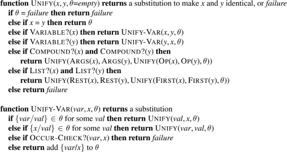
Hình 9.1 Thuật toán hợp nhất. Các đối số x và y có thể là bất kỳ biểu thức nào: một hằng số, một
biến, hoặc một biểu thức phức hợp như một câu hoặc một thuật ngữ phức tạp, hoặc một danh sách
các biểu thức. Đối số θ là một phép thế, ban đầu là phép thế rỗng, nhưng sau đó các cặp {biến/giá
trị} được thêm vào khi chúng ta đệ quy qua các đầu vào, so sánh từng phần tử của các biểu thức.
Trong một biểu thức phức hợp như F(A,B), trường OP(x) chọn ra ký hiệu hàm F và trường
ARGS(x) chọn ra danh sách đối số (A,B).
Lập chỉ mục vị từ hữu ích khi có nhiều ký hiệu vị từ nhưng chỉ một vài mệnh đề cho mỗi ký hiệu.
Tuy nhiên, đôi khi một vị từ có nhiều mệnh đề. Ví dụ, giả sử cơ quan thuế muốn theo dõi ai thuê
ai bằng vị từ 𝐸𝑚𝑝𝑙𝑜𝑦𝑠(𝑥, 𝑦) . Đây sẽ là một nhóm rất lớn với hàng triệu nhà tuyển dụng và hàng
chục triệu nhân viên. Trả lời một truy vấn như 𝐸𝑚𝑝𝑙𝑜𝑦𝑠(𝑥, 𝑅𝑖𝑐ℎ𝑎𝑟𝑑) bằng lập chỉ mục vị từ sẽ
yêu cầu quét toàn bộ nhóm.
Đối với truy vấn cụ thể này, sẽ hữu ích nếu các sự kiện được lập chỉ mục theo cả vị từ và đối số
thứ hai, có thể sử dụng một khóa kết hợp trong bảng băm. Khi đó, chúng ta chỉ cần tạo khóa từ
truy vấn và truy xuất chính xác các sự kiện hợp nhất với truy vấn. Đối với các truy vấn khác, như
𝐸𝑚𝑝𝑙𝑜𝑦𝑠(𝐼𝐵𝑀, 𝑦) , chúng ta cần lập chỉ mục các sự kiện bằng cách kết hợp vị từ với đối số đầu
tiên. Do đó, các sự kiện có thể được lưu trữ dưới nhiều khóa chỉ mục, giúp chúng có thể truy cập
ngay lập tức cho các truy vấn khác nhau mà chúng có thể hợp nhất.
Với một câu cần lưu trữ, có thể xây dựng các chỉ mục cho tất cả các truy vấn có thể hợp nhất với
nó. Đối với sự kiện 𝐸𝑚𝑝𝑙𝑜𝑦𝑠(𝐼𝐵𝑀, 𝑅𝑖𝑐ℎ𝑎𝑟𝑑) , các truy vấn là:
𝐸𝑚𝑝𝑙𝑜𝑦𝑠(𝐼𝐵𝑀, 𝑅𝑖𝑐ℎ𝑎𝑟𝑑) : IBM có thuê Richard không?
𝐸𝑚𝑝𝑙𝑜𝑦𝑠(𝑥, 𝑅𝑖𝑐ℎ𝑎𝑟𝑑) : Ai thuê Richard?
𝐸𝑚𝑝𝑙𝑜𝑦𝑠(𝐼𝐵𝑀, 𝑦) : IBM thuê ai?
𝐸𝑚𝑝𝑙𝑜𝑦𝑠(𝑥, 𝑦) : Ai thuê ai?
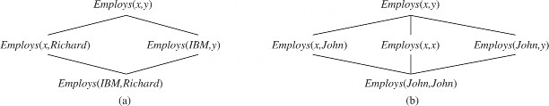
Hình 9.2 (a) Lưới bao hàm (subsumption lattice) có nút thấp nhất là Employs(IBM, Richard). (b)
Lưới bao hàm cho câu Employs(John, John).
Các truy vấn này tạo thành một lattice bao phủ, như trong Hình 9.2(a). Lattice này có một số tính
chất thú vị. Mỗi nút con trong lattice thu được từ nút cha bằng một phép thế duy nhất; và nút chung
“cao nhất” của hai nút bất kỳ là kết quả của việc áp dụng bộ hợp nhất tổng quát nhất của chúng.
Một câu với các hằng số lặp lại có một lattice hơi khác, như trong Hình 9.2(b). Mặc dù các ký hiệu
hàm không được hiển thị trong hình, chúng cũng có thể được tích hợp vào cấu trúc lattice.
Đối với các vị từ có số lượng đối số nhỏ, việc tạo chỉ mục cho mọi điểm trong lattice bao phủ là
một sự cân bằng tốt. Điều này yêu cầu nhiều công sức hơn khi lưu trữ, nhưng tăng tốc thời gian
truy xuất. Tuy nhiên, đối với một vị từ có 𝑛 đối số, lattice chứa 𝑂(2𝑛) nút. Nếu cho phép các ký
hiệu hàm, số lượng nút cũng tăng theo hàm mũ theo kích thước của các biểu thức trong câu cần
lưu trữ. Điều này có thể dẫn đến một số lượng lớn chỉ mục.
Chúng ta phải bằng cách nào đó giới hạn các chỉ mục vào những chỉ mục có khả năng được sử
dụng thường xuyên trong các truy vấn; nếu không, chúng ta sẽ tốn nhiều thời gian tạo chỉ mục hơn
là tiết kiệm được từ việc có chúng. Chúng ta có thể áp dụng một chính sách cố định, như chỉ duy
trì các chỉ mục trên các khóa bao gồm một vị từ cộng với một đối số duy nhất. Hoặc chúng ta có
thể học một chính sách thích ứng tạo ra các chỉ mục đáp ứng nhu cầu của các loại truy vấn được
đặt ra. Đối với các cơ sở dữ liệu thương mại với hàng tỷ sự kiện, vấn đề này đã được nghiên cứu
chuyên sâu, phát triển công nghệ và tối ưu hóa liên tục.
Suy diễn tiến
Trong Mục 7.5, chúng ta đã trình bày một thuật toán suy diễn tiến cho các cơ sở tri thức chứa các
mệnh đề xác định dạng mệnh đề. Ở đây, chúng ta mở rộng ý tưởng đó để áp dụng cho các mệnh
đề xác định bậc nhất.
Mệnh đề xác định bậc nhất
Một mệnh đề xác định bậc nhất là một phép tuyển (disjunction) của các literal, trong đó chỉ có
một literal là dương. Điều này có nghĩa một mệnh đề xác định có thể là một câu nguyên tử hoặc
một phép kéo theo có tiền đề là một phép hội của các literal dương và kết luận là một literal dương
duy nhất. Các lượng tử tồn tại không được phép, và các lượng tử phổ dụng được ngầm hiểu: nếu
bạn thấy biến 𝑥 trong một mệnh đề xác định, điều đó có nghĩa là có một lượng tử phổ dụng ∀𝑥
ngầm định. Một mệnh đề xác định bậc nhất điển hình có dạng như sau:
King(𝑥) ∧ Greedy(𝑥) ⇒ Evil(𝑥),
nhưng các literal như King(John) và Greedy(𝑦) cũng được tính là mệnh đề xác định. Các literal
bậc nhất có thể chứa biến, ví dụ Greedy(𝑦) được hiểu là “mọi người đều tham lam” (lượng tử phổ
dụng được ngầm hiểu).
Hãy áp dụng các mệnh đề xác định để biểu diễn bài toán sau:
Luật pháp quy định rằng một người Mỹ bán vũ khí cho các quốc gia thù địch là phạm tội. Đất
nước Nono, kẻ thù của Mỹ, có một số tên lửa, và tất cả tên lửa của họ đều được Đại tá West, một
người Mỹ, bán cho họ.
Đầu tiên, chúng ta biểu diễn các sự kiện này dưới dạng các mệnh đề xác định bậc nhất:
“…một người Mỹ bán vũ khí cho các quốc gia thù địch là phạm tội”:
American(𝑥) ∧ Weapon(𝑦) ∧ Sells(𝑥, 𝑦, 𝑧) ∧ Hostile(𝑧) ⇒ Criminal(𝑥). (9.3)
“Nono… có một số tên lửa.” Câu ∃𝑥Owns(Nono, 𝑥) ∧ Missile(𝑥) được chuyển thành hai
mệnh đề xác định bằng cách áp dụng Tồn tại cụ thể hóa, giới thiệu một hằng số mới 𝑀1 :
𝑀𝑖𝑠𝑠𝑖𝑙𝑒(𝑀1) (9.5)
“Tất cả tên lửa của Nono đều được Đại tá West bán cho họ”:
Missile(𝑥) ∧ Owns(Nono, 𝑥) ⇒ Sells(West, 𝑥,Nono). (9.6)
Chúng ta cũng cần biết rằng tên lửa là vũ khí:
Missile(𝑥) ⇒ Weapon(𝑥). (9.7)
Và phải biết rằng kẻ thù của Mỹ được coi là “thù địch”:
Enemy(𝑥,America) ⇒ Hostile(𝑥). (9.8)
“West, một người Mỹ…”:
American(West). (9.9)
“Đất nước Nono, kẻ thù của Mỹ…”:
Enemy(Nono,America). (9.10)
Cơ sở tri thức này là một cơ sở tri thức Datalog: Datalog là ngôn ngữ gồm các mệnh đề xác định
bậc nhất không chứa ký hiệu hàm. Tên Datalog xuất phát từ khả năng biểu diễn các phát biểu điển
hình trong cơ sở dữ liệu quan hệ. Việc không có ký hiệu hàm làm cho quá trình suy diễn trở nên
dễ dàng hơn nhiều.
Thuật toán suy diễn tiến đơn giản
Hình 9.3 trình bày một thuật toán suy diễn tiến đơn giản. Bắt đầu từ các sự kiện đã biết, thuật toán
kích hoạt tất cả các quy tắc có tiền đề được thỏa mãn, sau đó thêm kết luận của chúng vào tập sự
kiện đã biết. Quá trình này lặp lại cho đến khi truy vấn được trả lời (giả sử chỉ cần một câu trả lời)
hoặc không có sự kiện mới nào được thêm vào.
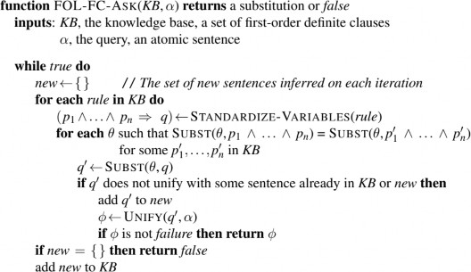
Hình 9.3 Một thuật toán suy diễn tiến (forward-chaining) đơn giản về mặt khái niệm, nhưng không
hiệu quả. Ở mỗi vòng lặp, nó thêm vào KB (cơ sở tri thức) tất cả các câu nguyên tử có thể được
suy ra trong một bước từ các câu kéo theo và các câu nguyên tử đã có trong KB. Hàm
STANDARDIZE-VARIABLES thay thế tất cả các biến trong các đối số của nó bằng các biến
mới chưa từng được sử dụng trước đây.
Lưu ý rằng một sự kiện không được coi là “mới” nếu nó chỉ là một cách đặt tên lại của một sự kiện
đã biết—một câu được coi là đặt tên lại của câu khác nếu chúng giống hệt nhau ngoại trừ tên biến.
Ví dụ, Likes(𝑥,IceCream) và Likes(𝑦,IceCream) là các cách đặt tên lại của nhau. Cả hai đều có
cùng ý nghĩa: “Mọi người đều thích kem.”
Chúng ta sử dụng bài toán tội phạm để minh họa cho FOL-FC-ASK. Các câu kéo theo có sẵn để
áp dụng là (9.3), (9.6), (9.7) và (9.8). Cần hai lần lặp:
Lần lặp đầu tiên: Quy tắc (9.3) có tiền đề chưa được thỏa mãn. Quy tắc (9.6) được thỏa
mãn với {𝑥/𝑀1} , và Sells(West, 𝑀1,Nono) được thêm vào. Quy tắc (9.7) được thỏa mãn
với {𝑥/𝑀1} , và Weapon(𝑀1) được thêm vào. Quy tắc (9.8) được thỏa mãn với {𝑥/Nono}
, và Hostile(Nono) được thêm vào.
Lần lặp thứ hai: Quy tắc (9.3) được thỏa mãn với {𝑥/West, 𝑦/𝑀1, 𝑧/Nono} , và suy luận
Criminal(West) được thêm vào.
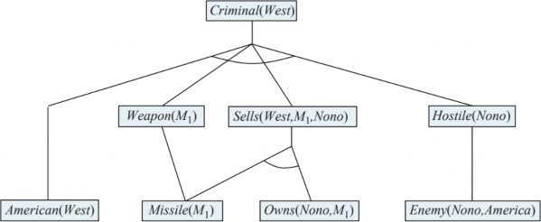
Hình 9.4 Cây chứng minh (proof tree) được tạo ra bởi suy diễn tiến (forward-chaining) trong ví dụ
về tội phạm. Các sự thật ban đầu xuất hiện ở cấp dưới cùng, các sự thật được suy ra ở lần lặp đầu
tiên ở cấp giữa, và các sự thật được suy ra ở lần lặp thứ hai ở cấp trên cùng.
Hình 9.4 cho thấy cây chứng minh được tạo ra. Lưu ý rằng không có suy luận mới nào có thể được
thực hiện tại thời điểm này vì mọi câu có thể được suy ra bằng suy diễn tiến đã được chứa rõ ràng
trong KB. Một cơ sở tri thức như vậy được gọi là điểm bất động của quá trình suy diễn.
FOL-FC-ASK dễ dàng được phân tích. Thứ nhất, nó đúng đắn vì mọi suy luận chỉ là áp dụng
Modus Ponens tổng quát, vốn đã đúng đắn. Thứ hai, nó đầy đủ đối với các cơ sở tri thức chứa
mệnh đề xác định; nghĩa là, nó trả lời mọi truy vấn mà câu trả lời được suy ra từ bất kỳ cơ sở tri
thức mệnh đề xác định nào.
Đối với các cơ sở tri thức Datalog không chứa ký hiệu hàm, việc chứng minh tính đầy đủ khá đơn
giản. Chúng ta bắt đầu bằng cách đếm số lượng sự kiện có thể được thêm vào, từ đó xác định số
lần lặp tối đa. Gọi 𝑘 là số lượng đối số tối đa của bất kỳ vị từ nào, 𝑝 là số lượng vị từ, và 𝑛 là số
lượng ký hiệu hằng. Rõ ràng, không thể có nhiều hơn 𝑝𝑛𝑘 sự kiện nguyên tử khác nhau, do đó sau
nhiều nhất 𝑝𝑛𝑘 lần lặp, thuật toán sẽ đạt đến điểm bất động. Sau đó, chúng ta có thể lập luận tương
tự như chứng minh tính đầy đủ của suy diễn tiến mệnh đề (xem trang 249).
Đối với các mệnh đề xác định tổng quát có chứa ký hiệu hàm, FOL-FC-ASK có thể tạo ra vô hạn
sự kiện mới, vì vậy chúng ta cần cẩn thận hơn. Đối với trường hợp câu truy vấn 𝑞 được suy ra,
chúng ta dựa vào định lý Herbrand (trang 300) để khẳng định rằng thuật toán sẽ tìm thấy chứng
minh. Nếu truy vấn không có câu trả lời, thuật toán có thể không dừng trong một số trường hợp.
Ví dụ, nếu cơ sở tri thức chứa các tiên đề Peano:
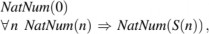
thì suy diễn tiến sẽ thêm NatNum(S(0)), NatNum(S(S(0))), NatNum(S(S(S(0)))), và cứ tiếp tục
như vậy. Vấn đề này không thể tránh khỏi trong trường hợp tổng quát. Giống như logic bậc nhất
tổng quát, bài toán suy ra với mệnh đề xác định là nửa quyết định được.
Suy diễn tiến hiệu quả
Thuật toán suy diễn tiến trong Hình 9.3 được thiết kế để dễ hiểu chứ không phải để hiệu quả. Có
ba nguồn gây ra sự kém hiệu quả:
Vòng lặp bên trong cố gắng khớp mọi quy tắc với mọi sự kiện trong cơ sở tri thức.
Thuật toán kiểm tra lại mọi quy tắc trong mỗi lần lặp, ngay cả khi chỉ có rất ít sự kiện mới
được thêm vào cơ sở tri thức.
Thuật toán có thể tạo ra nhiều sự kiện không liên quan đến mục tiêu.
Chúng ta sẽ giải quyết từng vấn đề này lần lượt.
Khớp quy tắc với sự kiện đã biết
Vấn đề khớp tiền đề của một quy tắc với các sự kiện trong cơ sở tri thức có vẻ đơn giản. Ví dụ, giả
sử chúng ta muốn áp dụng quy tắc:
Missile(𝑥) ⇒ Weapon(𝑥).
Chúng ta cần tìm tất cả các sự kiện khớp với Missile(𝑥) ; trong một cơ sở tri thức được lập chỉ
mục phù hợp, điều này có thể được thực hiện trong thời gian không đổi cho mỗi sự kiện. Bây giờ,
hãy xem xét một quy tắc như:
Missile(𝑥) ∧ Owns(Nono, 𝑥) ⇒ Sells(West, 𝑥,Nono).
Một lần nữa, chúng ta có thể tìm tất cả các đối tượng thuộc sở hữu của Nono trong thời gian không
đổi cho mỗi đối tượng; sau đó, với mỗi đối tượng, chúng ta kiểm tra xem nó có phải là tên lửa hay
không. Tuy nhiên, nếu cơ sở tri thức chứa nhiều đối tượng thuộc sở hữu của Nono và rất ít tên lửa,
thì tốt hơn là nên tìm tất cả các tên lửa trước, sau đó kiểm tra xem chúng có thuộc sở hữu của Nono
hay không. Đây là vấn đề thứ tự kết hợp: tìm một thứ tự để giải quyết các kết hợp của tiền đề
quy tắc sao cho tổng chi phí là tối thiểu. Hóa ra, việc tìm thứ tự tối ưu là NP-khó, nhưng có những
heuristic tốt có thể áp dụng. Ví dụ, heuristic giá trị còn lại tối thiểu (MRV) được sử dụng cho
CSP trong Chương 5 sẽ gợi ý sắp xếp các kết hợp để tìm tên lửa trước nếu có ít tên lửa hơn số đối
tượng thuộc sở hữu của Nono.
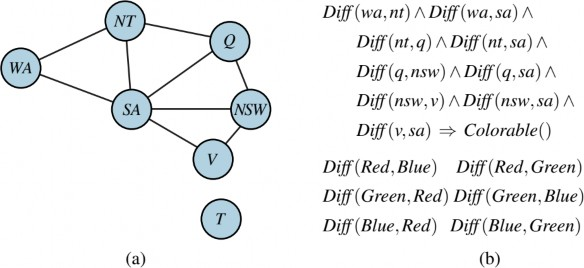
Hình 9.5 (a) Đồ thị ràng buộc (constraint graph) để tô màu bản đồ Úc. (b) Bài toán CSP (Constraint
Satisfaction Problem - Bài toán thỏa mãn ràng buộc) tô màu bản đồ được biểu diễn dưới dạng một
mệnh đề xác định (definite clause) duy nhất. Mỗi vùng trên bản đồ được biểu diễn dưới dạng một
biến có giá trị có thể là một trong các hằng số Red (Đỏ), Green (Xanh lá) hoặc Blue (Xanh dương)
(được khai báo là Diff - Khác nhau).
Mối liên hệ giữa khớp mẫu và thỏa mãn ràng buộc thực sự rất gần. Chúng ta có thể xem mỗi
kết hợp như một ràng buộc trên các biến mà nó chứa—ví dụ, Missile(𝑥) là một ràng buộc một
ngôi trên 𝑥 . Mở rộng ý tưởng này, chúng ta có thể biểu diễn mọi CSP miền hữu hạn dưới dạng
một mệnh đề xác định duy nhất cùng với một số sự kiện nền. Xem xét bài toán tô màu bản đồ từ
Hình 5.1, được hiển thị lại trong Hình 9.5(a). Một công thức tương đương dưới dạng một mệnh đề
xác định duy nhất được đưa ra trong Hình 9.5(b). Rõ ràng, kết luận Colorable() chỉ có thể được
suy ra nếu CSP có nghiệm.
Vì các CSP nói chung bao gồm các bài toán 3-SAT như các trường hợp đặc biệt, chúng ta có thể
kết luận rằng việc khớp một mệnh đề xác định với một tập hợp sự kiện là NP-khó. Điều này có vẻ
đáng ngại, nhưng có ba cách để lạc quan hơn:
CSP có thể được giải trong thời gian tuyến tính. Kết quả tương tự cũng áp dụng cho khớp
quy tắc.
Suy diễn tiến tăng cường
Khi chúng tôi trình bày cách suy diễn tiến hoạt động trên ví dụ tội phạm, chúng tôi đã “gian lận”
một chút. Cụ thể, chúng tôi đã bỏ qua một số khớp quy tắc được thực hiện bởi thuật toán trong
Hình 9.3. Ví dụ, trong lần lặp thứ hai, quy tắc:
Missile(𝑥) ⇒ Weapon(𝑥)
khớp với Missile(𝑀1) (một lần nữa), và tất nhiên kết luận Weapon(𝑀1) đã được biết nên không
có gì xảy ra. Những lần khớp quy tắc thừa như vậy có thể tránh được nếu chúng ta nhận thấy rằng:
Mọi sự kiện mới được suy ra trong lần lặp 𝑡 phải được suy ra từ ít nhất một sự kiện mới được suy
ra trong lần lặp 𝑡 − 1 .
Điều này đúng vì bất kỳ suy luận nào không yêu cầu sự kiện mới từ lần lặp 𝑡 − 1 đã có thể được
thực hiện ở lần lặp 𝑡 − 1 .
Nhận xét này dẫn đến một thuật toán suy diễn tiến tăng cường, trong đó ở lần lặp 𝑡 , chúng ta chỉ
kiểm tra một quy tắc nếu tiền đề của nó chứa một kết hợp 𝑝𝑖 khớp với một sự kiện 𝑝𝑖′ mới được
suy ra ở lần lặp 𝑡 − 1 . Bước khớp quy tắc sau đó cố định 𝑝𝑖 để khớp với 𝑝𝑖′ , nhưng cho phép các
kết hợp khác của quy tắc khớp với các sự kiện từ bất kỳ lần lặp nào trước đó. Thuật toán này tạo
ra chính xác các sự kiện giống nhau ở mỗi lần lặp như thuật toán trong Hình 9.3, nhưng hiệu quả
hơn nhiều.
Với việc lập chỉ mục phù hợp, dễ dàng xác định tất cả các quy tắc có thể được kích hoạt bởi bất
kỳ sự kiện nào, và nhiều hệ thống thực tế hoạt động ở chế độ “cập nhật”, trong đó suy diễn tiến
được thực hiện để phản ứng với mọi lệnh TELL. Các suy luận sẽ lan truyền qua tập hợp các quy
tắc cho đến khi đạt đến điểm bất động, sau đó quá trình bắt đầu lại với sự kiện mới tiếp theo.
Thông thường, chỉ một phần nhỏ các quy tắc trong cơ sở tri thức thực sự được kích hoạt khi thêm
một sự kiện cụ thể. Điều này có nghĩa là một lượng lớn công việc thừa được thực hiện khi liên tục
xây dựng các khớp một phần có một số tiền đề chưa được thỏa mãn. Ví dụ tội phạm của chúng ta
quá nhỏ để minh họa hiệu quả điều này, nhưng hãy lưu ý rằng một khớp một phần được xây dựng
trong lần lặp đầu tiên giữa quy tắc:
American(𝑥) ∧ Weapon(𝑦) ∧ Sells(𝑥, 𝑦, 𝑧) ∧ Hostile(𝑧) ⇒ Criminal(𝑥)
và sự kiện American(West) . Khớp một phần này sau đó bị loại bỏ và xây dựng lại trong lần lặp
thứ hai (khi quy tắc thành công). Sẽ tốt hơn nếu giữ lại và dần dần hoàn thiện các khớp một phần
khi các sự kiện mới xuất hiện, thay vì loại bỏ chúng.
Thuật toán Rete là thuật toán đầu tiên giải quyết vấn đề này. Thuật toán tiền xử lý tập hợp các quy
tắc trong cơ sở tri thức để xây dựng một mạng luồng dữ liệu, trong đó mỗi nút là một literal từ tiền
đề của một quy tắc. Các phép gán biến chảy qua mạng và bị lọc ra khi chúng không khớp với một
literal. Nếu hai literal trong một quy tắc chia sẻ cùng một biến—ví dụ, Sells(𝑥, 𝑦, 𝑧) và Hostile(𝑧)
trong ví dụ tội phạm—thì các phép gán từ mỗi literal được lọc qua một nút bình đẳng. Một phép
gán biến đến một nút cho một literal 𝑛 -ngôi như Sells(𝑥, 𝑦, 𝑧) có thể phải chờ các phép gán cho
các biến khác được thiết lập trước khi quá trình có thể tiếp tục. Tại bất kỳ thời điểm nào, trạng thái
của mạng Rete nắm bắt tất cả các khớp một phần của các quy tắc, tránh được một lượng lớn tính
toán lại.
Mạng Rete và nhiều cải tiến khác đã trở thành thành phần chính của các hệ thống sản xuất, một
trong những hệ thống suy diễn tiến đầu tiên được sử dụng rộng rãi. Hệ thống XCON (ban đầu gọi
là R1; McDermott, 1982) được xây dựng với kiến trúc hệ thống sản xuất. XCON chứa hàng ngàn
quy tắc để thiết kế cấu hình các thành phần máy tính cho khách hàng của Tập đoàn Thiết bị Kỹ
thuật số. Đây là một trong những thành công thương mại đầu tiên trong lĩnh vực mới nổi của hệ
chuyên gia. Nhiều hệ thống tương tự khác đã được xây dựng với cùng công nghệ cơ bản, được
triển khai trong ngôn ngữ đa năng Ops-5.
Các hệ thống sản xuất cũng phổ biến trong các kiến trúc nhận thức—tức là các mô hình lập luận
của con người—như ACT (Anderson, 1983) và SOAR (Laird et al., 1987). Trong các hệ thống
như vậy, “bộ nhớ làm việc” của hệ thống mô hình hóa bộ nhớ ngắn hạn của con người, và các sản
xuất là một phần của bộ nhớ dài hạn. Trong mỗi chu kỳ hoạt động, các sản xuất được khớp với bộ
nhớ làm việc chứa các sự kiện. Một sản xuất có điều kiện được thỏa mãn có thể thêm hoặc xóa sự
kiện trong bộ nhớ làm việc. Ngược lại với tình huống điển hình trong cơ sở dữ liệu, các hệ thống
sản xuất thường có nhiều quy tắc và tương đối ít sự kiện. Với công nghệ khớp được tối ưu hóa phù
hợp, các hệ thống có thể hoạt động trong thời gian thực với hàng chục triệu quy tắc.
Các sự kiện không liên quan
Một nguồn kém hiệu quả khác là suy diễn tiến thực hiện tất cả các suy luận cho phép dựa trên các
sự kiện đã biết, ngay cả khi chúng không liên quan đến mục tiêu. Trong ví dụ tội phạm của chúng
ta, không có quy tắc nào có thể rút ra các kết luận không liên quan. Nhưng nếu có nhiều quy tắc
mô tả thói quen ăn uống của người Mỹ hoặc các thành phần và giá cả của tên lửa, thì FOL-FC-
ASK sẽ tạo ra các kết luận không liên quan.
Một cách để tránh rút ra các kết luận không liên quan là sử dụng suy diễn lùi, như được mô tả
trong Mục 9.4. Một cách khác là giới hạn suy diễn tiến cho một tập hợp con được chọn lọc của các
quy tắc, như trong PL-FC-ENTAILS? (trang 249). Một cách tiếp cận thứ ba đã xuất hiện trong
lĩnh vực cơ sở dữ liệu suy diễn, là các cơ sở dữ liệu quy mô lớn, giống như cơ sở dữ liệu quan hệ,
nhưng sử dụng suy diễn tiến làm công cụ suy luận tiêu chuẩn thay vì các truy vấn SQL. Ý tưởng
là viết lại tập hợp quy tắc, sử dụng thông tin từ mục tiêu, sao cho chỉ các phép gán biến liên quan—
thuộc về một tập hợp gọi là tập ma thuật—được xem xét trong quá trình suy luận tiến. Ví dụ, nếu
mục tiêu là Criminal(West) , quy tắc kết luận Criminal(𝑥) sẽ được viết lại để bao gồm một kết
hợp bổ sung ràng buộc giá trị của 𝑥 :
Magic(𝑥) ∧ American(𝑥) ∧ Weapon(𝑦) ∧ Sells(𝑥, 𝑦, 𝑧) ∧ Hostile(𝑧) ⇒ Criminal(𝑥).
Sự kiện Magic(West) cũng được thêm vào KB. Bằng cách này, ngay cả khi cơ sở tri thức chứa
thông tin về hàng triệu người Mỹ, chỉ có Đại tá West sẽ được xem xét trong quá trình suy luận
tiến. Quá trình hoàn chỉnh để định nghĩa các tập ma thuật và viết lại cơ sở tri thức quá phức tạp để
trình bày ở đây, nhưng ý tưởng cơ bản là thực hiện một loại suy luận lùi “tổng quát” từ mục tiêu
để xác định các phép gán biến cần được ràng buộc. Do đó, cách tiếp cận tập ma thuật có thể được
coi là một dạng lai giữa suy luận tiến và tiền xử lý lùi.
This response is AI-generated, for reference only.
Suy luận lùi (Backward Chaining)
Họ thuật toán suy luận logic thứ hai sử dụng suy luận lùi trên các mệnh đề xác định (definite
clauses). Các thuật toán này làm việc ngược từ mục tiêu, thông qua các luật để tìm các sự kiện đã
biết hỗ trợ cho chứng minh.
Thuật toán suy luận lùi
Hình 9.6 trình bày một thuật toán suy luận lùi cho các mệnh đề xác định. FOL-BC-ASK(KB, goal)
sẽ được chứng minh nếu cơ sở tri thức chứa một luật có dạng lhs ⇒ goal, trong đó lhs (vế trái) là
một danh sách các mệnh đề kết hợp. Một sự kiện nguyên tử như American(West) được coi là một
mệnh đề có lhs là danh sách rỗng. Một truy vấn chứa biến có thể được chứng minh bằng nhiều
cách. Ví dụ, truy vấn Person(x) có thể được chứng minh với phép thế {x/John} hoặc {x/Richard}.
Do đó, chúng ta triển khai FOL-BC-ASK như một generator—một hàm trả về nhiều lần, mỗi lần
đưa ra một kết quả khả dĩ (xem Phụ lục B).
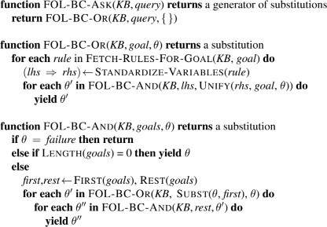
Hình 9.6 Một thuật toán suy diễn lùi (backward-chaining) đơn giản cho các cơ sở tri thức bậc nhất
(first-order knowledge bases).
Suy luận lùi là một dạng tìm kiếm AND/OR—phần OR vì mục tiêu truy vấn có thể được chứng
minh bằng bất kỳ luật nào trong cơ sở tri thức, và phần AND vì tất cả các mệnh đề kết hợp trong
lhs của một mệnh đề phải được chứng minh. FOL-BC-OR hoạt động bằng cách lấy tất cả các mệnh
đề có thể kết hợp với mục tiêu, chuẩn hóa các biến trong mệnh đề thành các biến mới, và sau đó,
nếu rhs của mệnh đề thực sự kết hợp được với mục tiêu, chứng minh từng mệnh đề trong lhs bằng
FOL-BC-AND. Hàm này làm việc bằng cách chứng minh lần lượt từng mệnh đề, theo dõi phép thế
tích lũy trong quá trình thực hiện. Hình 9.7 là cây chứng minh để suy ra Criminal(West) từ các mệnh
đề (9.3) đến (9.10).
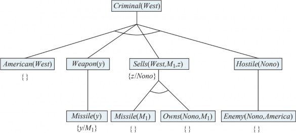
Hình 9.7 Cây chứng minh (proof tree) được xây dựng bằng suy diễn lùi (backward chaining) để
chứng minh rằng West là tội phạm. Cây này nên được đọc theo chiều sâu, từ trái sang phải. Để
chứng minh Criminal(West), chúng ta phải chứng minh bốn mệnh đề liên kết (conjuncts) bên dưới
nó. Một số trong số này đã có trong cơ sở tri thức (knowledge base), và những mệnh đề khác yêu
cầu suy diễn lùi tiếp. Các phép gán (bindings) cho mỗi lần hợp nhất (unification) thành công được
hiển thị bên cạnh mục tiêu con (subgoal) tương ứng. Lưu ý rằng khi một mục tiêu con trong một
mệnh đề liên kết thành công, phép thế (substitution) của nó sẽ được áp dụng cho các mục tiêu con
tiếp theo. Do đó, khi thuật toán FOL-BC-ASK đến mệnh đề liên kết cuối cùng, ban đầu là
Hostile(z), thì z đã được gán với Nono.
Suy luận lùi, như chúng ta đã viết, rõ ràng là một thuật toán tìm kiếm theo chiều sâu. Điều này có
nghĩa là yêu cầu không gian của nó tỷ lệ tuyến tính với kích thước của chứng minh. Nó cũng có
nghĩa là suy luận lùi (không như suy luận tiến) gặp vấn đề với các trạng thái lặp và tính không đầy
đủ. Mặc dù có những hạn chế này, suy luận lùi đã trở nên phổ biến và hiệu quả trong các ngôn ngữ
lập trình logic.
Lập trình logic
Algorithm = Logic + Control.
Các chương trình Prolog là tập hợp các mệnh đề xác định được viết bằng một ký hiệu hơi khác so
với logic bậc nhất tiêu chuẩn. Prolog sử dụng chữ in hoa cho biến và chữ thường cho hằng—ngược
lại với quy ước của chúng ta về logic. Dấu phẩy phân tách các mệnh đề kết hợp trong một mệnh
đề, và mệnh đề được viết “ngược” so với những gì chúng ta quen thuộc; thay vì ( A B C ) trong
Prolog chúng ta có ( C := A, B ). Dưới đây là một ví dụ điển hình:
criminal(X) :- american(X), weapon(Y), sells(X,Y,Z), hostile(Z).
Trong Prolog, ký hiệu [E|L] biểu thị một danh sách có phần tử đầu tiên là E và phần còn lại là L.
Dưới đây là một chương trình Prolog cho append(X,Y,Z), thành công nếu danh sách Z là kết quả
của việc nối danh sách X và Y:
append([A|X], Y, [A|Z]) :- append(X, Y, Z).
Bằng tiếng Anh, chúng ta có thể đọc các mệnh đề này như sau: (1) nối danh sách rỗng và danh
sách Y tạo ra cùng danh sách Y, và (2) [A|Z] là kết quả của việc nối [A|X] và Y, với điều kiện Z là
kết quả của việc nối X và Y. Trong hầu hết các ngôn ngữ cấp cao, chúng ta có thể viết một hàm đệ
quy tương tự mô tả cách nối hai danh sách. Tuy nhiên, định nghĩa Prolog thực sự mạnh mẽ hơn,
vì nó mô tả một quan hệ giữa ba đối số, thay vì một hàm được tính từ hai đối số. Ví dụ, chúng ta
có thể hỏi truy vấn append(X, Y, [1,2,3]): hai danh sách nào có thể được nối để tạo ra [1,2,3]? Prolog
trả về các giải pháp:
X = [] Y = [1,2,3];
X = [1] Y = [2,3];
X = [1,2] Y = [3];
X = [1,2,3] Y = [].
Việc thực thi các chương trình Prolog được thực hiện thông qua suy luận lùi theo chiều sâu, trong
đó các mệnh đề được thử theo thứ tự chúng được viết trong cơ sở tri thức. Thiết kế của Prolog thể
hiện sự thỏa hiệp giữa tính khai báo và hiệu quả thực thi. Một số khía cạnh của Prolog nằm ngoài
suy luận logic tiêu chuẩn:
Prolog sử dụng ngữ nghĩa cơ sở dữ liệu (Section 8.2.8) thay vì ngữ nghĩa bậc nhất, và điều
này thể hiện trong cách xử lý đẳng thức và phủ định (xem Section 9.4.4).
Có một tập hợp các hàm tích hợp sẵn cho số học. Các ký hiệu nguyên tử sử dụng các ký
hiệu hàm này được “chứng minh” bằng cách thực thi mã thay vì suy luận thêm. Ví dụ, mục
tiêu “X is 4+3” thành công với X được gán là 7. Mặt khác, mục tiêu “5 is X+Y” thất bại, vì
các hàm tích hợp không giải được phương trình tùy ý.
Có các vị từ tích hợp có tác dụng phụ khi thực thi. Chúng bao gồm các vị từ nhập/xuất và
các vị từ assert/retract để sửa đổi cơ sở tri thức. Các vị từ như vậy không có trong logic và
có thể tạo ra kết quả khó hiểu—ví dụ, nếu các sự kiện được khẳng định trong một nhánh
của cây chứng minh cuối cùng thất bại.
Kiểm tra xuất hiện (occur check) bị bỏ qua trong thuật toán hợp nhất của Prolog. Điều này
có nghĩa là một số suy luận không chính xác có thể được thực hiện; những điều này hầu
như không bao giờ là vấn đề trong thực tế.
Prolog sử dụng tìm kiếm suy luận lùi theo chiều sâu mà không kiểm tra đệ quy vô hạn.
Điều này tạo ra một ngôn ngữ lập trình dễ sử dụng và rất nhanh khi được sử dụng đúng
cách, nhưng nó có nghĩa là một số chương trình trông giống như logic hợp lệ sẽ không bao
giờ dừng.
Suy luận dư thừa và vòng lặp vô hạn
Giờ chúng ta chuyển sang điểm yếu của Prolog: sự không phù hợp giữa tìm kiếm theo chiều sâu
và các cây tìm kiếm bao gồm các trạng thái lặp lại và các đường dẫn vô hạn. Xét chương trình
logic sau đây quyết định xem có tồn tại đường đi giữa hai điểm trên đồ thị có hướng hay không:
path(X, Z) :- link(X, Z).
path(X, Z) :- path(X, Y), link(Y, Z).
Một đồ thị đơn giản ba nút, được mô tả bởi các sự kiện link(a, b) và link(b, c), được hiển thị trong
Hình 9.8(a). Với chương trình này, truy vấn path(a, c) tạo ra cây chứng minh như trong Hình 9.9(a).
Mặt khác, nếu chúng ta đặt hai mệnh đề theo thứ tự:
path(X, Z) :- path(X, Y), link(Y, Z).path(X, Z) :- link(X, Z).
thì Prolog sẽ đi theo đường dẫn vô hạn như trong Hình 9.9(b). Do đó, Prolog không đầy đủ như
một bộ chứng minh định lý cho các mệnh đề xác định—ngay cả đối với các chương trình Datalog,
như ví dụ này cho thấy—vì, đối với một số cơ sở tri thức, nó không thể chứng minh các câu được
suy ra. Lưu ý rằng suy luận tiến không gặp vấn đề này: một khi path(a, b), path(b, c) và path(a, c)
được suy ra, suy luận tiến sẽ dừng.
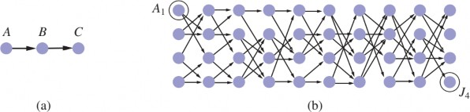
Hình 9.8 (a) Việc tìm một đường đi từ A đến C có thể khiến Prolog rơi vào vòng lặp vô hạn. (b)
Một đồ thị trong đó mỗi nút được kết nối với hai nút con ngẫu nhiên ở lớp tiếp theo. Việc tìm một
đường đi từ A1 đến J4 đòi hỏi 877 suy luận.
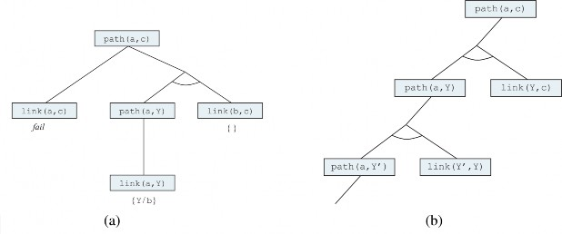
Hình 9.9 (a) Bằng chứng rằng tồn tại một đường đi từ A đến C. (b) Cây chứng minh vô hạn được
tạo ra khi các mệnh đề được sắp xếp theo thứ tự “sai”.
Suy luận lùi theo chiều sâu cũng có vấn đề với các tính toán dư thừa. Ví dụ, khi tìm đường đi từ
A1 đến J4 trong Hình 9.8(b), Prolog thực hiện 877 suy luận, hầu hết trong số đó liên quan đến việc
tìm tất cả các đường đi có thể đến các nút mà từ đó mục tiêu không thể đạt được. Điều này tương
tự như vấn đề trạng thái lặp được thảo luận trong Chương 3. Tổng số suy luận có thể tăng theo cấp
số nhân so với số sự kiện cơ bản được tạo ra. Nếu chúng ta áp dụng suy luận tiến thay thế, tối đa (
n^2 ) sự kiện path(X, Y) có thể được tạo ra liên kết n nút. Đối với vấn đề trong Hình 9.8(b), chỉ cần
62 suy luận.
Suy luận tiến trên các bài toán tìm kiếm đồ thị là một ví dụ về quy hoạch động, trong đó các giải
pháp cho các bài toán con được xây dựng dần từ các bài toán con nhỏ hơn và được lưu vào bộ nhớ
đệm để tránh tính toán lại. Chúng ta có thể đạt được hiệu ứng tương tự trong một hệ thống suy
luận lùi, ngoại trừ việc ở đây chúng ta chia nhỏ các mục tiêu lớn thành các mục tiêu nhỏ hơn, thay
vì xây dựng chúng.
Dù bằng cách nào, việc lưu trữ các kết quả trung gian để tránh trùng lặp là chìa khóa. Đây là cách
tiếp cận của các hệ thống lập trình logic có bảng (tabled logic programming), sử dụng các cơ chế
lưu trữ và truy xuất hiệu quả. Lập trình logic có bảng kết hợp tính định hướng mục tiêu của suy
luận lùi với hiệu quả quy hoạch động của suy luận tiến. Nó cũng đầy đủ cho các cơ sở tri thức
Datalog, có nghĩa là người lập trình không cần lo lắng nhiều về các vòng lặp vô hạn. (Tuy nhiên,
vẫn có thể gặp vòng lặp vô hạn với các vị từ như father(X, Y) tham chiếu đến một số lượng đối
tượng không giới hạn.)
Ngữ nghĩa cơ sở dữ liệu của Prolog
Prolog sử dụng ngữ nghĩa cơ sở dữ liệu, như đã thảo luận trong Mục 8.2.8. Giả định tên duy nhất
nói rằng mọi hằng số Prolog và mọi hạng tử cơ bản đều tham chiếu đến một đối tượng riêng biệt,
và giả định thế giới đóng nói rằng chỉ những câu được suy ra từ cơ sở tri thức mới là đúng. Không
có cách nào để khẳng định một câu là sai trong Prolog. Điều này làm cho Prolog kém biểu cảm
hơn logic bậc nhất, nhưng nó là một phần giúp Prolog hiệu quả và ngắn gọn hơn. Xét các khẳng
định sau về một số khóa học:
Course(CS, 101), Course(CS, 102), Course(CS, 106), Course(EE, 101). (9.11)
Theo giả định tên duy nhất, CS và EE là khác nhau (cũng như 101, 102 và 106), vì vậy điều này có
nghĩa là có bốn khóa học riêng biệt. Theo giả định thế giới đóng, không có khóa học nào khác, vì
vậy chính xác có bốn khóa học. Nhưng nếu đây là các khẳng định trong FOL thay vì ngữ nghĩa cơ
sở dữ liệu, thì tất cả những gì chúng ta có thể nói là có từ một đến vô hạn khóa học. Đó là vì các
khẳng định (trong FOL) không phủ nhận khả năng tồn tại các khóa học khác không được đề cập,
cũng như không nói rằng các khóa học được đề cập là khác nhau. Nếu chúng ta muốn dịch Phương
trình (9.11) sang FOL, chúng ta sẽ nhận được câu sau:
Course(d, n) ⇔ (d = CS ∧ n = 101) ∨ (d = CS ∧ n = 102) ∨ (d = CS ∧ n = 106) ∨ (d = EE ∧ n = 101). (9.1
2)
Đây được gọi là phần bù (completion) của Phương trình (9.11). Nó biểu diễn trong FOL ý tưởng
rằng có tối đa bốn khóa học. Để biểu diễn trong FOL ý tưởng rằng có ít nhất bốn khóa học, chúng
ta cần viết phần bù của vị từ đẳng thức:
x = y ⇔ (x = CS ∧ y = CS) ∨ (x = EE ∧ y = EE) ∨ (x = 101 ∧ y = 101) ∨ (x = 102 ∧ y = 102) ∨ (x = 106 ∧
y = 106).
Phần bù hữu ích để hiểu ngữ nghĩa cơ sở dữ liệu, nhưng với mục đích thực tế, nếu vấn đề của bạn
có thể được mô tả bằng ngữ nghĩa cơ sở dữ liệu, hiệu quả hơn là suy luận bằng Prolog hoặc một
số hệ thống ngữ nghĩa cơ sở dữ liệu khác, thay vì dịch sang FOL và suy luận bằng một bộ chứng
minh định lý FOL đầy đủ.
Lập trình logic ràng buộc
Trong phần thảo luận về suy luận tiến (Mục 9.3), chúng ta đã chỉ ra cách các bài toán thỏa mãn
ràng buộc (CSP) có thể được mã hóa thành các mệnh đề xác định. Prolog tiêu chuẩn giải quyết các
bài toán như vậy giống hệt như thuật toán quay lui được đưa ra trong Hình 5.5.
Vì quay lui liệt kê các miền giá trị của biến, nó chỉ hoạt động cho các CSP có miền hữu hạn. Theo
thuật ngữ Prolog, phải có một số lượng hữu hạn các giải pháp cho bất kỳ mục tiêu nào với các biến
chưa ràng buộc. (Ví dụ: bài toán tô màu bản đồ trong đó mỗi biến có thể nhận một trong bốn màu
khác nhau.) Các CSP có miền vô hạn—ví dụ: với các biến giá trị nguyên hoặc thực—yêu cầu các
thuật toán hoàn toàn khác, chẳng hạn như lan truyền ràng buộc hoặc quy hoạch tuyến tính.
Xét ví dụ sau. Chúng ta định nghĩa triangle(X, Y, Z) như một vị từ đúng nếu ba đối số là các số thỏa
mãn bất đẳng thức tam giác:
triangle(X, Y, Z) :-
X > 0, Y > 0, Z > 0, X + Y > Z, Y + Z > X, X + Z > Y.
Nếu chúng ta hỏi Prolog truy vấn triangle(3, 4, 5), nó sẽ thành công. Mặt khác, nếu chúng ta hỏi
triangle(3, 4, Z), sẽ không tìm thấy giải pháp nào, vì mục tiêu con Z > 0 không thể được xử lý bởi
Prolog; chúng ta không thể so sánh một giá trị chưa ràng buộc với 0.
Lập trình logic ràng buộc (Constraint Logic Programming - CLP) cho phép các biến bị ràng
buộc thay vì bị buộc. Một giải pháp CLP là tập hợp các ràng buộc cụ thể nhất trên các biến truy
vấn có thể được suy ra từ cơ sở tri thức. Ví dụ, giải pháp cho truy vấn triangle(3, 4, Z) là ràng buộc
( 7 > Z > 1 ). Các chương trình logic tiêu chuẩn chỉ là một trường hợp đặc biệt của CLP trong đó
các ràng buộc giải pháp phải là các ràng buộc đẳng thức—tức là các phép gán.
Các hệ thống CLP kết hợp nhiều thuật toán giải ràng buộc khác nhau cho các ràng buộc được phép
trong ngôn ngữ. Ví dụ, một hệ thống cho phép các bất đẳng thức tuyến tính trên các biến giá trị
thực có thể bao gồm một thuật toán quy hoạch tuyến tính để giải các ràng buộc đó. Các hệ thống
CLP cũng áp dụng cách tiếp cận linh hoạt hơn để giải các truy vấn logic tiêu chuẩn. Ví dụ, thay vì
quay lui theo chiều sâu, từ trái sang phải, chúng có thể sử dụng bất kỳ thuật toán hiệu quả nào
được thảo luận trong Chương 5, bao gồm sắp xếp mệnh đề kết hợp theo heuristic, quay lui có nhảy
(backjumping), điều kiện cắt (cutset conditioning), v.v. Do đó, các hệ thống CLP kết hợp các yếu
tố của thuật toán thỏa mãn ràng buộc, lập trình logic và cơ sở dữ liệu suy diễn.
Một số hệ thống cho phép lập trình viên kiểm soát nhiều hơn thứ tự tìm kiếm để suy luận đã được
định nghĩa. Ngôn ngữ MRS (Genesereth và Smith, 1981; Russell, 1985) cho phép lập trình viên
viết các siêu luật (metarules) để xác định mệnh đề kết hợp nào được thử trước. Người dùng có thể
viết một luật nói rằng mục tiêu có ít biến nhất nên được thử trước hoặc có thể viết các luật dành
riêng cho miền cho các vị từ cụ thể.
Phương pháp Phân giải
Phương pháp phân giải là họ thứ ba trong ba họ hệ thống logic mà chúng ta xem xét, và là phương
pháp duy nhất có thể áp dụng cho bất kỳ cơ sở tri thức nào, không chỉ các mệnh đề xác định. Trong
mục 7.5.2, chúng ta đã thấy rằng phương pháp phân giải trong logic mệnh đề là một thủ tục suy
diễn đầy đủ cho logic mệnh đề; trong phần này, chúng ta mở rộng nó sang logic bậc nhất.
Dạng chuẩn hội (CNF) trong logic bậc nhất
Bước đầu tiên là chuyển đổi các câu sang dạng chuẩn hội (CNF)—nghĩa là một hội các mệnh đề,
trong đó mỗi mệnh đề là một tuyển các literal. Trong CNF, các literal có thể chứa các biến, được
giả định là được lượng tử hóa phổ dụng. Ví dụ, câu:
∀𝑥, 𝑦, 𝑧 American(𝑥) ∧ Weapon(𝑦) ∧ Sells(𝑥, 𝑦, 𝑧) ∧ Hostile(𝑧) ⇒ Criminal(𝑥)
sẽ trở thành, trong CNF:
¬American(𝑥) ∨ ¬Weapon(𝑦) ∨ ¬Sells(𝑥, 𝑦, 𝑧) ∨ ¬Hostile(𝑧) ∨ Criminal(𝑥).
Điểm quan trọng là mọi câu trong logic bậc nhất đều có thể được chuyển đổi thành một câu CNF
tương đương về mặt suy diễn.
Quy trình chuyển đổi sang CNF tương tự như trường hợp logic mệnh đề, đã được trình bày trong
mục 7.5.2. Sự khác biệt chính nằm ở việc cần loại bỏ các lượng tử tồn tại. Chúng ta minh họa quy
trình bằng cách dịch câu: "Mọi người yêu tất cả động vật sẽ được ai đó yêu", hay:
∀𝑥[∀𝑦 Animal(𝑦) ⇒ Loves(𝑥, 𝑦)] ⇒ [∃𝑦 Loves(𝑦, 𝑥)].
Các bước như sau:
Loại bỏ phép kéo theo: Thay 𝑃 ⇒ 𝑄 bằng ¬𝑃 ∨ 𝑄. Trong câu mẫu, điều này cần được
thực hiện hai lần:
∀𝑥¬[∀𝑦¬Animal(𝑦) ∨ Loves(𝑥, 𝑦)] ∨ [∃𝑦 Loves(𝑦, 𝑥)].
¬∀𝑥 𝑝\𝑞𝑢𝑎𝑑\𝑡𝑒𝑥𝑡𝑡𝑟ở𝑡ℎà𝑛ℎ\𝑞𝑢𝑎𝑑∃𝑥 ¬𝑝\¬∃𝑥 𝑝\𝑞𝑢𝑎𝑑\𝑡𝑒𝑥𝑡𝑡𝑟ở𝑡ℎà𝑛ℎ\𝑞𝑢𝑎𝑑∀𝑥 ¬𝑝.
Câu của chúng ta trải qua các biến đổi sau:
∀𝑥[∃𝑦 Animal(𝑦) ∧ ¬Loves(𝑥, 𝑦)] ∨ [∃𝑦 Loves(𝑦, 𝑥)].
∀𝑥[∃𝑦 Animal(𝑦) ∧ ¬Loves(𝑥, 𝑦)] ∨ [∃𝑧 Loves(𝑧, 𝑥)].
∀𝑥[Animal(𝐹(𝑥)) ∧ ¬Loves(𝑥, 𝐹(𝑥))] ∨ Loves(𝐺(𝑥), 𝑥).
Ở đây, 𝐹 và 𝐺 là các hàm Skolem.
[Animal(𝐹(𝑥)) ∧ ¬Loves(𝑥, 𝐹(𝑥))] ∨ Loves(𝐺(𝑥), 𝑥).
[Animal(𝐹(𝑥)) ∨ Loves(𝐺(𝑥), 𝑥)] ∧ [¬Loves(𝑥, 𝐹(𝑥)) ∨ Loves(𝐺(𝑥), 𝑥)].
Câu này giờ đã ở dạng CNF và gồm hai mệnh đề. Mặc dù khó đọc hơn câu gốc, nhưng quá trình
chuyển đổi có thể được tự động hóa dễ dàng.
Quy tắc suy diễn phân giải
Quy tắc phân giải cho các mệnh đề bậc nhất là phiên bản nâng cao của quy tắc phân giải trong
logic mệnh đề. Hai mệnh đề, được giả định là đã được chuẩn hóa để không có biến chung, có thể
được phân giải nếu chúng chứa các literal bù nhau. Các literal trong logic mệnh đề là bù nhau nếu
một cái là phủ định của cái kia; trong logic bậc nhất, các literal là bù nhau nếu chúng hợp nhất
được với phủ định của nhau. Do đó, chúng ta có:
𝓁1 ∨ ⋯ ∨ 𝓁𝑘, 𝑚1 ∨ ⋯ ∨ 𝑚𝑛
SUBST(𝜃, 𝓁1 ∨ ⋯ ∨ 𝓁𝑖−1 ∨ 𝓁𝑖+1 ∨ ⋯ ∨ 𝓁𝑘 ∨ 𝑚1 ∨ ⋯ ∨ 𝑚𝑗−1 ∨ 𝑚𝑗+1 ∨ ⋯ ∨ 𝑚𝑛)
trong đó UNIFY(𝓁𝑖, ¬𝑚𝑗) = 𝜃.
Ví dụ, chúng ta có thể phân giải hai mệnh đề:
[Animal(𝐹(𝑥)) ∨ Loves(𝐺(𝑥), 𝑥)] và [¬Loves(𝑢, 𝑣) ∨ ¬Kills(𝑢, 𝑣)]
bằng cách loại bỏ các literal bù nhau Loves(𝐺(𝑥), 𝑥) và ¬Loves(𝑢, 𝑣), với bộ hợp nhất 𝜃 =
{𝑢/𝐺(𝑥), 𝑣/𝑥}, để tạo ra mệnh đề phân giải:
[Animal(𝐹(𝑥)) ∨ ¬Kills(𝐺(𝑥), 𝑥)].
Quy tắc này được gọi là quy tắc phân giải nhị phân vì nó phân giải chính xác hai literal. Tuy nhiên,
quy tắc phân giải nhị phân tự nó không tạo ra một thủ tục suy diễn đầy đủ. Quy tắc phân giải đầy
đủ phân giải các tập con của các literal trong mỗi mệnh đề có thể hợp nhất được. Một cách tiếp
cận khác là mở rộng phép nhân tử (factoring)—loại bỏ các literal dư thừa—sang trường hợp logic
bậc nhất. Phép nhân tử trong logic mệnh đề giảm hai literal giống nhau thành một; trong logic bậc
nhất, nó giảm hai literal thành một nếu chúng có thể hợp nhất. Bộ hợp nhất phải được áp dụng cho
toàn bộ mệnh đề. Sự kết hợp giữa phân giải nhị phân và phép nhân tử là đầy đủ.
Ví dụ minh họa
Phương pháp phân giải chứng minh rằng 𝐾𝐵 𝖼 𝛼 bằng cách chứng minh rằng 𝐾𝐵 ∧ ¬𝛼 không
thỏa mãn được—nghĩa là, bằng cách suy ra mệnh đề rỗng. Cách tiếp cận thuật toán giống hệt với
trường hợp mệnh đề, được mô tả trong Hình 7.13, vì vậy chúng ta không cần lặp lại ở đây. Thay
vào đó, chúng tôi đưa ra hai ví dụ chứng minh. Ví dụ đầu tiên là vụ án từ Mục 9.3. Các câu ở dạng
CNF là:
¬𝐴𝑚𝑒𝑟𝑖𝑐𝑎𝑛(𝑥) ∨ ¬𝑊𝑒𝑎𝑝𝑜𝑛(𝑦) ∨ ¬𝑆𝑒𝑙𝑙𝑠(𝑥, 𝑦, 𝑧) ∨ ¬𝐻𝑜𝑠𝑡𝑖𝑙𝑒(𝑧) ∨ 𝐶𝑟𝑖𝑚𝑖𝑛𝑎𝑙(𝑥)
¬𝑀𝑖𝑠𝑠𝑖𝑙𝑒(𝑥) ∨ ¬𝑂𝑤𝑛𝑠(𝑁𝑜𝑛𝑜, 𝑥) ∨ 𝑆𝑒𝑙𝑙𝑠(𝑊𝑒𝑠𝑡, 𝑥, 𝑁𝑜𝑛𝑜)
¬𝐸𝑛𝑒𝑚𝑦(𝑥, 𝐴𝑚𝑒𝑟𝑖𝑐𝑎) ∨ 𝐻𝑜𝑠𝑡𝑖𝑙𝑒(𝑥)
¬𝑀𝑖𝑠𝑠𝑖𝑙𝑒(𝑥) ∨ 𝑊𝑒𝑎𝑝𝑜𝑛(𝑥)
𝑂𝑤𝑛𝑠(𝑁𝑜𝑛𝑜, 𝑀1)
𝑀𝑖𝑠𝑠𝑖𝑙𝑒(𝑀1)
𝐴𝑚𝑒𝑟𝑖𝑐𝑎𝑛(𝑊𝑒𝑠𝑡)
𝐸𝑛𝑒𝑚𝑦(𝑁𝑜𝑛𝑜, 𝐴𝑚𝑒𝑟𝑖𝑐𝑎).
Chúng tôi cũng bao gồm mục tiêu phủ định ¬𝐶𝑟𝑖𝑚𝑖𝑛𝑎𝑙(𝑊𝑒𝑠𝑡). Chứng minh bằng phương pháp
phân giải được thể hiện trong Hình 9.10. Lưu ý cấu trúc: một "xương sống" duy nhất bắt đầu bằng
mệnh đề mục tiêu, phân giải với các mệnh đề từ cơ sở tri thức cho đến khi mệnh đề rỗng được sinh
ra. Đây là đặc trưng của phương pháp phân giải trên các cơ sở tri thức mệnh đề Horn. Trên thực
tế, các mệnh đề dọc theo xương sống chính tương ứng chính xác với các giá trị liên tiếp của biến
mục tiêu trong thuật toán suy diễn lùi của Hình 9.6. Điều này là do chúng tôi luôn chọn phân giải
với một mệnh đề mà literal dương hợp nhất được với literal ngoài cùng bên trái của mệnh đề "hiện
tại" trên xương sống; đây chính xác là những gì xảy ra trong suy diễn lùi. Do đó, suy diễn lùi chỉ
là một trường hợp đặc biệt của phương pháp phân giải với một chiến lược kiểm soát cụ thể để
quyết định bước phân giải nào sẽ thực hiện tiếp theo.
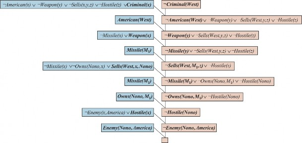
Hình 9.10 Một chứng minh bằng phép giải (resolution proof) rằng West là tội phạm. Tại mỗi bước
giải, các vị từ (literals) hợp nhất được in đậm và mệnh đề với vị từ dương được tô màu xanh lam.
Ví dụ thứ hai của chúng tôi sử dụng phép Skolem hóa và liên quan đến các mệnh đề không phải là
mệnh đề xác định. Điều này dẫn đến một cấu trúc chứng minh phức tạp hơn. Trong tiếng Anh:
Mọi người yêu tất cả động vật sẽ được ai đó yêu.
Bất kỳ ai giết một con vật sẽ không được ai yêu.
Jack yêu tất cả động vật.
Jack hoặc Curiosity đã giết con mèo tên Tuna.
Có phải Curiosity đã giết con mèo?
Đầu tiên, chúng tôi biểu diễn các câu gốc, một số kiến thức nền và mục tiêu phủ định G trong logic
bậc nhất:
Bây giờ chúng tôi áp dụng quy trình chuyển đổi để chuyển mỗi câu sang dạng CNF:
Chứng minh bằng phương pháp phân giải rằng Curiosity đã giết con mèo được trình bày trong
Hình 9.11. Bằng tiếng Anh, chứng minh có thể được diễn giải như sau:
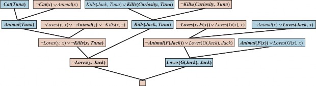
Hình 9.11 Một chứng minh bằng phép giải (resolution proof) rằng "Sự tò mò đã giết chết con
mèo". Lưu ý việc sử dụng factoring (nhân tử hóa) trong quá trình suy ra mệnh đề Loves(G(Jack),
Jack). Cũng cần lưu ý ở phía trên bên phải, phép hợp nhất (unification) của Loves(x, F(x)) và
Loves(Jack, x) chỉ có thể thành công sau khi các biến đã được standardized apart (chuẩn hóa
riêng biệt).
Giả sử Curiosity không giết Tuna. Chúng ta biết rằng hoặc Jack hoặc Curiosity đã làm điều đó; do
đó, Jack phải là thủ phạm. Bây giờ, Tuna là một con mèo và mèo là động vật, vì vậy Tuna là một
con vật. Vì bất kỳ ai giết một con vật đều không được ai yêu, chúng ta biết rằng không ai yêu Jack.
Mặt khác, Jack yêu tất cả động vật, vì vậy ai đó yêu anh ta; do đó, chúng ta có một mâu thuẫn. Vì
vậy, Curiosity đã giết con mèo.
Chứng minh trả lời câu hỏi "Có phải Curiosity đã giết con mèo?" nhưng thường chúng ta muốn
đặt các câu hỏi tổng quát hơn, chẳng hạn như "Ai đã giết con mèo?" Phương pháp phân giải có thể
làm điều này, nhưng cần thêm một chút công việc để có được câu trả lời. Mục tiêu là
∃𝑤 𝐾𝑖𝑙𝑙𝑠(𝑤, 𝑇𝑢𝑛𝑎), khi bị phủ định, trở thành ¬𝐾𝑖𝑙𝑙𝑠(𝑤, 𝑇𝑢𝑛𝑎) trong CNF. Lặp lại chứng minh
trong Hình 9.11 với mục tiêu phủ định mới, chúng ta thu được một cây chứng minh tương tự,
nhưng với phép thay thế {𝑤/𝐶𝑢𝑟𝑖𝑜𝑠𝑖𝑡𝑦} trong một trong các bước. Vì vậy, trong trường hợp này,
việc tìm ra ai đã giết con mèo chỉ là vấn đề theo dõi các ràng buộc cho các biến truy vấn trong
chứng minh. Thật không may, phương pháp phân giải đôi khi có thể tạo ra các chứng minh không
mang tính xây dựng cho các mục tiêu tồn tại, nơi chúng ta biết một truy vấn là đúng, nhưng không
có một ràng buộc duy nhất cho biến.
Tính đầy đủ của phương pháp phân giải
Phần này trình bày một chứng minh về tính đầy đủ của phương pháp phân giải. Những ai sẵn lòng
chấp nhận điều này có thể bỏ qua phần này một cách an toàn.
Chúng tôi sẽ chứng minh rằng phương pháp phân giải có tính chất đầy đủ trong việc phủ định(refutation-complete), nghĩa là nếu một tập hợp các câu không thỏa mãn được, thì phương pháp
phân giải luôn có thể suy ra một mâu thuẫn. Phương pháp phân giải không thể được sử dụng để
sinh ra tất cả các hệ quả logic của một tập hợp các câu, nhưng nó có thể được sử dụng để chứng
minh rằng một câu nhất định được suy ra từ tập hợp các câu đó. Do đó, nó có thể được sử dụng để
tìm tất cả các câu trả lời cho một câu hỏi 𝑄(𝑥) bằng cách chứng minh rằng 𝐾𝐵 ∧ ¬𝑄(𝑥) không
thỏa mãn được.
Chúng tôi coi như đã biết rằng bất kỳ câu nào trong logic bậc nhất (không bao gồm đẳng thức) đều
có thể được viết lại thành một tập hợp các mệnh đề ở dạng CNF. Điều này có thể được chứng minh
bằng quy nạp trên dạng của câu, sử dụng các câu nguyên tố làm trường hợp cơ sở (Davis và
Putnam, 1960). Mục tiêu của chúng tôi do đó là chứng minh điều sau: nếu 𝑆 là một tập hợp các
mệnh đề không thỏa mãn được, thì việc áp dụng một số hữu hạn các bước phân giải cho 𝑆 sẽ dẫn
đến một mâu thuẫn.
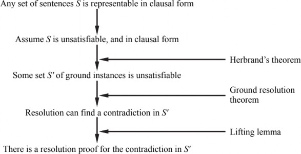
Hình 9.12 Cấu trúc của một chứng minh tính đầy đủ (completeness proof) cho phép giải
(resolution).
Phác thảo chứng minh của chúng tôi dựa trên chứng minh gốc của Robinson với một số đơn giản
hóa từ Genesereth và Nilsson (1987). Cấu trúc cơ bản của chứng minh (Hình 9.12) như sau:
Đầu tiên, chúng tôi quan sát thấy rằng nếu 𝑆 không thỏa mãn được, thì tồn tại một tập hợp
cụ thể các trường hợp nền (ground instances) của các mệnh đề trong 𝑆 sao cho tập hợp này
cũng không thỏa mãn được (định lý Herbrand).
Sau đó, chúng tôi viện dẫn định lý phân giải nền (ground resolution theorem) đã được trình
bày trong Chương 7, trong đó nói rằng phương pháp phân giải mệnh đề là đầy đủ đối với
các câu nền.
Tiếp theo, chúng tôi sử dụng một bổ đề nâng (lifting lemma) để chỉ ra rằng, với bất kỳ
chứng minh phân giải mệnh đề nào sử dụng tập hợp các câu nền, đều tồn tại một chứng
minh phân giải logic bậc nhất tương ứng sử dụng các câu logic bậc nhất mà từ đó các câu
nền được sinh ra.
Để thực hiện bước đầu tiên, chúng ta cần ba khái niệm mới:
Vũ trụ Herbrand (Herbrand universe): Nếu 𝑆 là một tập hợp các mệnh đề, thì 𝐻𝑆, vũ trụ
Herbrand của 𝑆, là tập hợp tất cả các hạng tử nền có thể xây dựng được từ:
a. Các ký hiệu hàm trong 𝑆, nếu có.
b. Các ký hiệu hằng trong 𝑆, nếu có; nếu không có, thì sử dụng một ký hiệu hằng
mặc định, 𝑆.
Ví dụ, nếu 𝑆 chỉ chứa mệnh đề ¬𝑃(𝑥, 𝐹(𝑥, 𝐴)) ∨ ¬𝑄(𝑥, 𝐴) ∨ 𝑅(𝑥, 𝐵), thì 𝐻𝑆 là tập hợp vô hạn các
hạng tử nền sau:
{𝐴, 𝐵, 𝐹(𝐴, 𝐴), 𝐹(𝐴, 𝐵), 𝐹(𝐵, 𝐴), 𝐹(𝐵, 𝐵), 𝐹(𝐴, 𝐹(𝐴, 𝐴)), … }.
Sự bão hòa (Saturation): Nếu 𝑆 là một tập hợp các mệnh đề và 𝑃 là một tập hợp các hạng
tử nền, thì 𝑃(𝑆), sự bão hòa của 𝑆 đối với 𝑃, là tập hợp tất cả các mệnh đề nền thu được
bằng cách áp dụng tất cả các phép thế nhất quán có thể có của các hạng tử nền trong 𝑃 cho
các biến trong 𝑆.
Cơ sở Herbrand (Herbrand base): Sự bão hòa của một tập hợp 𝑆 các mệnh đề đối với vũ
trụ Herbrand của nó được gọi là cơ sở Herbrand của 𝑆, ký hiệu là 𝐻𝑆(𝑆). Ví dụ, nếu 𝑆 chỉ
chứa mệnh đề nêu trên, thì 𝐻𝑆(𝑆) là tập hợp vô hạn các mệnh đề sau:
¬𝑃(𝐴, 𝐹(𝐴, 𝐴)) ∨ ¬𝑄(𝐴, 𝐴) ∨ 𝑅(𝐴, 𝐵)
¬𝑃(𝐵, 𝐹(𝐵, 𝐴)) ∨ ¬𝑄(𝐵, 𝐴) ∨ 𝑅(𝐵, 𝐵), ¬𝑃(𝐹(𝐴, 𝐴), 𝐹(𝐹(𝐴, 𝐴), 𝐴)) ∨ ¬𝑄(𝐹(𝐴, 𝐴), 𝐴)
∨ 𝑅(𝐹(𝐴, 𝐴), 𝐵), ¬𝑃(𝐹(𝐴, 𝐵), 𝐹(𝐹(𝐴, 𝐵), 𝐴)) ∨ ¬𝑄(𝐹(𝐴, 𝐵), 𝐴)
∨ 𝑅(𝐹(𝐴, 𝐵), 𝐵), … }
Các định nghĩa này cho phép chúng ta phát biểu một dạng của định lý Herbrand (Herbrand, 1930):
Nếu một tập hợp 𝑆 các mệnh đề không thỏa mãn được, thì tồn tại một tập hợp con hữu hạn của
𝐻𝑆(𝑆) cũng không thỏa mãn được.
Gọi 𝑆′ là tập hợp con hữu hạn này của các câu nền. Bây giờ, chúng ta có thể viện dẫn định lý phân
giải nền (trang 246) để chỉ ra rằng bao đóng phân giải 𝑅𝐶(𝑆′) chứa mệnh đề rỗng. Nghĩa là, việc
chạy phương pháp phân giải mệnh đề đến khi hoàn thành trên 𝑆′ sẽ suy ra một mâu thuẫn.
Bây giờ chúng ta đã thiết lập rằng luôn tồn tại một chứng minh phân giải liên quan đến một tập
hợp con hữu hạn của cơ sở Herbrand của 𝑆, bước tiếp theo là chỉ ra rằng có một chứng minh phân
giải sử dụng các mệnh đề của chính 𝑆, vốn không nhất thiết là các mệnh đề nền. Chúng ta bắt đầu
bằng cách xem xét một ứng dụng đơn lẻ của quy tắc phân giải. Robinson đã phát biểu bổ đề sau:
Cho 𝐶1 và 𝐶2 là hai mệnh đề không có biến chung, và cho 𝐶1′ và 𝐶2′ là các trường hợp nền của 𝐶1
và 𝐶2. Nếu 𝐶′ là một phân giải thức của 𝐶1′ và 𝐶2′, thì tồn tại một mệnh đề 𝐶 sao cho (1) 𝐶 là một
phân giải thức của 𝐶1 và 𝐶2 và (2) 𝐶′ là một trường hợp nền của 𝐶.
Bằng cách mở rộng ngôn ngữ logic bậc nhất một chút để cho phép sơ đồ quy nạp toán học trong
số học, Kurt Gödel đã chứng minh được trong định lý bất toàn của mình rằng tồn tại những câu
số học đúng nhưng không thể chứng minh được.
Việc chứng minh định lý bất toàn có phần vượt ra ngoài phạm vi của cuốn sách này, vì nó chiếm
ít nhất 30 trang, nhưng chúng ta có thể đưa ra một gợi ý ở đây. Chúng ta bắt đầu với lý thuyết logic
về các con số. Trong lý thuyết này, có một hằng số duy nhất, 0, và một hàm duy nhất, 𝑆 (hàm kế
thừa). Trong mô hình dự định, 𝑆(0) biểu thị 1, 𝑆(𝑆(0)) biểu thị 2, và cứ thế; do đó, ngôn ngữ này
có tên cho tất cả các số tự nhiên. Từ vựng cũng bao gồm các ký hiệu hàm +, ×, và 𝐸𝑥𝑝𝑡 (hàm mũ)
cùng với các liên từ logic và lượng tử thông thường.
Bước đầu tiên là nhận thấy rằng tập hợp các câu mà chúng ta có thể viết trong ngôn ngữ này có
thể được liệt kê. (Hãy tưởng tượng định nghĩa một thứ tự bảng chữ cái trên các ký hiệu và sau đó
sắp xếp, theo thứ tự bảng chữ cái, mỗi tập hợp các câu có độ dài 1, 2, và cứ thế.) Sau đó, chúng ta
có thể đánh số mỗi câu 𝛼 bằng một số tự nhiên duy nhất #𝛼 (số Gödel). Điều này rất quan trọng:
lý thuyết số học chứa tên cho mỗi câu của chính nó. Tương tự, chúng ta có thể đánh số mỗi chứng
minh 𝑃 bằng một số Gödel 𝐺(𝑃), vì một chứng minh đơn giản chỉ là một chuỗi hữu hạn các câu.
Bây giờ, giả sử chúng ta có một tập hợp 𝐴 các câu có thể liệt kê đệ quy, là những phát biểu đúng
về các số tự nhiên. Nhớ lại rằng 𝐴 có thể được đặt tên bằng một tập hợp các số nguyên nhất định,
chúng ta có thể tưởng tượng viết trong ngôn ngữ của mình một câu 𝛼(𝑗, 𝐴) có dạng như sau:
∀𝑖 không phải là số Gödel của một chứng minh cho câu có số Gödel 𝑗,
trong đó chứng minh chỉ sử dụng các tiền đề trong 𝐴.
Sau đó, đặt 𝜎 là câu 𝛼(#𝜎, 𝐴), tức là một câu khẳng định tính không thể chứng minh được của
chính nó từ 𝐴. (Việc câu này luôn tồn tại là đúng nhưng không hoàn toàn hiển nhiên.)
Bây giờ, chúng ta đưa ra lập luận khéo léo sau: Giả sử rằng 𝜎 có thể được chứng minh từ 𝐴; khi
đó 𝜎 là sai (vì 𝜎 nói rằng nó không thể được chứng minh). Nhưng như vậy, chúng ta có một câu
sai có thể được chứng minh từ 𝐴, điều này có nghĩa là 𝐴 không thể chỉ bao gồm các câu đúng—
một sự vi phạm giả thiết của chúng ta. Do đó, 𝜎 không thể được chứng minh từ 𝐴. Nhưng đây
chính là điều mà bản thân 𝜎 khẳng định; vì vậy, 𝜎 là một câu đúng.
Như vậy, chúng ta đã chỉ ra (ngoại trừ 29 trang rưỡi) rằng với bất kỳ tập hợp nào các câu đúng
trong lý thuyết số học, và đặc biệt là bất kỳ tập hợp tiên đề cơ bản nào, đều tồn tại những câu đúng
khác không thể được chứng minh từ những tiên đề đó. Điều này thiết lập, trong số những thứ khác,
rằng chúng ta không bao giờ có thể chứng minh tất cả các định lý toán học trong bất kỳ hệ tiên đề
nào. Rõ ràng, đây là một phát hiện quan trọng đối với toán học. Ý nghĩa của nó đối với 𝐴 đã được
tranh luận rộng rãi, bắt đầu từ những suy đoán của chính Gödel. Chúng ta sẽ tiếp tục cuộc tranh
luận này trong Chương 28.
Bổ đề này được gọi là bổ đề nâng (lifting lemma), vì nó nâng một bước chứng minh từ các mệnh
đề nền lên các mệnh đề logic bậc nhất tổng quát. Để chứng minh bổ đề nâng cơ bản này, Robinson
đã phải phát minh ra phép hợp nhất và suy ra tất cả các tính chất của bộ hợp nhất tổng quát nhất
(MGU). Thay vì lặp lại chứng minh ở đây, chúng tôi chỉ minh họa bổ đề:
𝐶1 = ¬𝑃(𝑥, 𝐹(𝑥, 𝐴)) ∨ ¬𝑄(𝑥, 𝐴) ∨ 𝑅(𝑥, 𝐵)
𝐶2 = ¬𝑁(𝐺(𝑦), 𝑧) ∨ 𝑃(𝐻(𝑦), 𝑧)
𝐶1′ = ¬𝑃(𝐻(𝐵), 𝐹(𝐻(𝐵), 𝐴)) ∨ ¬𝑄(𝐻(𝐵), 𝐴) ∨ 𝑅(𝐻(𝐵), 𝐵)
𝐶2′ = ¬𝑁(𝐺(𝐵), 𝐹(𝐻(𝐵), 𝐴)) ∨ 𝑃(𝐻(𝐵), 𝐹(𝐻(𝐵), 𝐴))
𝐶′ = ¬𝑁(𝐺(𝐵), 𝐹(𝐻(𝐵), 𝐴)) ∨ ¬𝑄(𝐻(𝐵), 𝐴) ∨ 𝑅(𝐻(𝐵), 𝐵)
𝐶 = ¬𝑁(𝐺(𝑦), 𝐹(𝐻(𝑦), 𝐴)) ∨ ¬𝑄(𝐻(𝑦), 𝐴) ∨ 𝑅(𝐻(𝑦), 𝐵).
Chúng ta thấy rằng 𝐶′ thực sự là một trường hợp nền của 𝐶. Nói chung, để 𝐶1′ và 𝐶2′ có bất kỳ
phân giải thức nào, chúng phải được xây dựng bằng cách trước tiên áp dụng cho 𝐶1 và 𝐶2 bộ hợp
nhất tổng quát nhất của một cặp literal bù nhau trong 𝐶1 và 𝐶2.
Từ bổ đề nâng, dễ dàng suy ra một phát biểu tương tự về bất kỳ chuỗi ứng dụng nào của quy tắc
phân giải:
Với bất kỳ mệnh đề 𝐶′ nào trong bao đóng phân giải của 𝑆′, tồn tại một mệnh đề 𝐶 trong bao đóng
phân giải của 𝑆 sao cho 𝐶′ là một trường hợp nền của 𝐶 và việc suy dẫn 𝐶 có cùng độ dài với việc
suy dẫn 𝐶′.
Từ sự kiện này, suy ra rằng nếu mệnh đề rỗng xuất hiện trong bao đóng phân giải của 𝑆′, thì nó
cũng phải xuất hiện trong bao đóng phân giải của 𝑆. Điều này là do mệnh đề rỗng không thể là
một trường hợp nền của bất kỳ mệnh đề nào khác. Tóm lại: chúng tôi đã chỉ ra rằng nếu 𝑆 không
thỏa mãn được, thì có một suy dẫn hữu hạn của mệnh đề rỗng bằng cách sử dụng quy tắc phân
giải.
Việc nâng việc chứng minh định lý từ các mệnh đề nền lên các mệnh đề logic bậc nhất mang lại
một sự gia tăng đáng kể về sức mạnh. Sự gia tăng này đến từ việc chứng minh logic bậc nhất chỉ
cần khởi tạo các biến ở mức cần thiết cho chứng minh, trong khi các phương pháp mệnh đề nền
yêu cầu kiểm tra một số lượng lớn các khởi tạo tùy ý.
Bình đẳng (Equality)
Không có phương pháp suy luận nào được mô tả trước đó trong chương này có thể xử lý một khẳng
định dạng 𝑥 = 𝑦 mà không cần thêm một số công việc bổ sung. Có ba cách tiếp cận riêng biệt có
thể được áp dụng:
∀𝑥 𝑥 = 𝑥
∀𝑥, 𝑦 𝑥 = 𝑦 ⇒ 𝑦 = 𝑥
∀𝑥, 𝑦, 𝑧 𝑥 = 𝑦 ∧ 𝑦 = 𝑧 ⇒ 𝑥 = 𝑧
∀𝑥, 𝑦 𝑥 = 𝑦 ⇒ (𝑃1(𝑥) ⇔ 𝑃1(𝑦))
∀𝑥, 𝑦 𝑥 = 𝑦 ⇒ (𝑃2(𝑥) ⇔ 𝑃2(𝑦))
⋮
∀𝑤, 𝑥, 𝑦, 𝑧 𝑤 = 𝑦 ∧ 𝑥 = 𝑧 ⇒ (𝐹1(𝑤, 𝑥) = 𝐹1(𝑦, 𝑧))
∀𝑤, 𝑥, 𝑦, 𝑧 𝑤 = 𝑦 ∧ 𝑥 = 𝑧 ⇒ (𝐹2(𝑤, 𝑥) = 𝐹2(𝑦, 𝑧))
⋮
Với các câu này, một quy trình suy luận tiêu chuẩn như phân giải có thể thực hiện các
nhiệm vụ đòi hỏi lập luận về bình đẳng, chẳng hạn như giải các phương trình toán học. Tuy
nhiên, những tiên đề này sẽ tạo ra rất nhiều kết luận, hầu hết trong số chúng không hữu ích
cho việc chứng minh.
Thêm quy tắc suy luận thay vì tiên đề (Adding inference rules rather than axioms):Quy tắc đơn giản nhất, demodulation, lấy một mệnh đề đơn vị 𝑥 = 𝑦 và một mệnh đề 𝛼
chứa thuật ngữ 𝑥, sau đó tạo ra một mệnh đề mới bằng cách thay thế 𝑦 cho 𝑥 trong 𝛼. Nó
hoạt động nếu thuật ngữ trong 𝛼 hợp nhất được với 𝑥; không cần phải chính xác bằng 𝑥.
Lưu ý rằng demodulation có hướng; với 𝑥 = 𝑦, 𝑥 luôn được thay thế bằng 𝑦, không bao
giờ ngược lại. Điều này có nghĩa là demodulation có thể được sử dụng để đơn giản hóa các
biểu thức bằng cách sử dụng các demodulator như 𝑧 + 0 = 𝑧 hoặc 𝑧1 = 𝑧.
Ví dụ khác, với:
Birthdate(Father(Father(Bella)),1926)
chúng ta có thể kết luận bằng demodulation:
𝐵𝑖𝑟𝑡ℎ𝑑𝑎𝑡𝑒(𝑃𝑎𝑡𝑒𝑟𝑛𝑎𝑙𝐺𝑟𝑎𝑛𝑑𝑓𝑎𝑡ℎ𝑒𝑟(𝐵𝑒𝑙𝑙𝑎),1926).
Một cách chính thức hơn, chúng ta có:
Demodulation: Với bất kỳ thuật ngữ 𝑥, 𝑦 và 𝑧, trong đó 𝑧 xuất hiện ở đâu đó trong
literal 𝑚𝑖 và 𝑈𝑁𝐼𝐹𝑌(𝑥, 𝑧) = 𝜃 ≠ failure,
𝑥=𝑦, 𝑚1∨⋯∨𝑚𝑛
SUB(SUBST(𝜃,𝑥),SUBST(𝜃,𝑦),𝑚1∨⋯∨𝑚𝑛)
trong đó SUBST là phép thay thế thông thường của một danh sách ràng buộc, và
SUB(𝑥, 𝑦, 𝑚) có nghĩa là thay thế 𝑥 bằng 𝑦 ở đâu đó trong 𝑚.
Quy tắc này cũng có thể được mở rộng để xử lý các mệnh đề không phải đơn vị trong đó
có dấu bằng:
Paramodulation: Với bất kỳ thuật ngữ 𝑥, 𝑦 và 𝑧, trong đó 𝑧 xuất hiện ở đâu đó
trong literal 𝑚𝑖 và 𝑈𝑁𝐼𝐹𝑌(𝑥, 𝑧) = 𝜃,
𝓁1∨⋯∨𝓁𝑘∨𝑥=𝑦, 𝑚1∨⋯∨𝑚𝑛
SUB(SUBST(𝜃,𝑥),SUBST(𝜃,𝑦),SUBST(𝜃,𝓁1∨⋯∨𝓁𝑘∨𝑚1∨⋯∨𝑚𝑛))
Ví dụ, từ:
𝑃(𝐹(𝑥, 𝐵), 𝑥) ∨ 𝑄(𝑥) và 𝐹(𝐴, 𝑦) = 𝑦 ∨ 𝑅(𝑦)
chúng ta có 𝜃 = 𝑈𝑁𝐼𝐹𝑌(𝐹(𝐴, 𝑦), 𝐹(𝑥, 𝐵)) = {𝑥/𝐴, 𝑦/𝐵}, và có thể kết luận bằng
paramodulation mệnh đề:
𝑃(𝐵, 𝐴) ∨ 𝑄(𝐴) ∨ 𝑅(𝐵).
Paramodulation tạo ra một quy trình suy luận hoàn chỉnh cho logic bậc nhất với bình đẳng.
Xử lý lập luận bình đẳng hoàn toàn trong một thuật toán hợp nhất mở rộng (HandlingNghĩa là, các
thuật ngữ có thể hợp nhất nếu chúng có thể chứng minh được là bằng nhau dưới một phép
thay thế nào đó, trong đó "có thể chứng minh" cho phép lập luận về bình đẳng. Ví dụ, các
thuật ngữ 1 + 2 và 2 + 1 thông thường không thể hợp nhất, nhưng một thuật toán hợp nhất
biết rằng 𝑥 + 𝑦 = 𝑦 + 𝑥 có thể hợp nhất chúng với phép thay thế rỗng. Hợp nhất phươngloại này có thể được thực hiện bằng các thuật toán hiệu
quả được thiết kế cho các tiên đề cụ thể (giao hoán, kết hợp, v.v.) thay vì thông qua suy
luận rõ ràng với các tiên đề đó. Các trình chứng minh định lý sử dụng kỹ thuật này có liên
quan chặt chẽ với các hệ thống CLP được mô tả trong Mục 9.4.
Các chiến lược phân giải
Chúng ta biết rằng việc áp dụng lặp lại quy tắc suy luận phân giải cuối cùng sẽ tìm ra một chứng
minh nếu chứng minh đó tồn tại. Trong phần này, chúng ta sẽ xem xét các chiến lược giúp tìm
chứng minh một cách hiệu quả.
Ưu tiên đơn vị (Unit preference): Chiến lược này ưu tiên thực hiện các phép phân giải trong đó
một trong các câu là một ký tự đơn (còn được gọi là mệnh đề đơn vị). Ý tưởng đằng sau chiến lược
này là chúng ta đang cố gắng tạo ra một mệnh đề rỗng, vì vậy có thể là một ý tưởng tốt để ưu tiên
các suy luận tạo ra các mệnh đề ngắn hơn. Việc phân giải một câu đơn vị (chẳng hạn như 𝑃) với
bất kỳ câu nào khác (chẳng hạn như ¬𝑃 ∨ ¬𝑄 ∨ 𝑅) luôn tạo ra một mệnh đề (trong trường hợp
này là ¬𝑄 ∨ 𝑅) ngắn hơn mệnh đề kia. Khi chiến lược ưu tiên đơn vị lần đầu tiên được thử nghiệm
cho suy luận mệnh đề vào năm 1964, nó đã dẫn đến một sự cải thiện đáng kể về tốc độ, giúp việc
chứng minh các định lý mà trước đây không thể xử lý trở nên khả thi. Phân giải đơn vị (Unitlà một dạng hạn chế của phân giải trong đó mỗi bước phân giải phải liên quan đến một
mệnh đề đơn vị. Phân giải đơn vị không đầy đủ trong trường hợp tổng quát, nhưng đầy đủ cho các
mệnh đề Horn. Các chứng minh phân giải đơn vị trên các mệnh đề Horn tương tự như suy luận
tiến.
Bộ chứng minh định lý OTTER (McCune, 1990) sử dụng một dạng tìm kiếm ưu tiên tốt nhất.
Hàm heuristic của nó đo lường "trọng số" của mỗi mệnh đề, trong đó các mệnh đề nhẹ hơn được
ưu tiên. Việc lựa chọn chính xác heuristic phụ thuộc vào người dùng, nhưng nhìn chung, trọng số
của một mệnh đề nên tương quan với kích thước hoặc độ phức tạp của nó. Các mệnh đề đơn vị
được coi là nhẹ; do đó, việc tìm kiếm có thể được xem như một sự tổng quát hóa của chiến lược
ưu tiên đơn vị.
Để đảm bảo tính đầy đủ của chiến lược này, chúng ta có thể chọn tập hỗ trợ 𝑆 sao cho phần còn
lại của các câu có thể thỏa mãn đồng thời. Ví dụ, người ta có thể sử dụng phủ định của truy vấn
làm tập hỗ trợ, với giả định rằng cơ sở tri thức ban đầu là nhất quán. (Xét cho cùng, nếu nó không
nhất quán, thì việc truy vấn suy ra từ nó là vô nghĩa.) Chiến lược tập hỗ trợ có thêm lợi thế là tạo
ra các cây chứng minh hướng mục tiêu, thường dễ hiểu đối với con người.
Phân giải đầu vào (Input resolution): Trong chiến lược này, mỗi phép phân giải kết hợp một
trong các câu đầu vào (từ cơ sở tri thức hoặc truy vấn) với một số câu khác. Chứng minh trong
Hình 9.10 (trang 319) chỉ sử dụng các phép phân giải đầu vào và có hình dạng đặc trưng của một
"xương sống" đơn với các câu đơn kết hợp vào xương sống. Rõ ràng, không gian của các cây
chứng minh có hình dạng này nhỏ hơn không gian của tất cả các đồ thị chứng minh. Trong các cơ
sở tri thức Horn, Modus Ponens là một dạng chiến lược phân giải đầu vào, vì nó kết hợp một phép
suy diễn từ cơ sở tri thức ban đầu với một số câu khác. Do đó, không có gì ngạc nhiên khi phân
giải đầu vào là đầy đủ cho các cơ sở tri thức ở dạng Horn, nhưng không đầy đủ trong trường hợp
tổng quát. Chiến lược phân giải tuyến tính (linear resolution) là một sự tổng quát hóa nhẹ cho
phép 𝑃 và 𝑄 được phân giải cùng nhau nếu 𝑃 nằm trong cơ sở tri thức ban đầu hoặc nếu 𝑃 là một
tổ tiên của 𝑄 trong cây chứng minh. Phân giải tuyến tính là đầy đủ.
Bao hàm (Subsumption): Phương pháp bao hàm loại bỏ tất cả các câu bị bao hàm bởi (nghĩa là
cụ thể hơn) một câu hiện có trong cơ sở tri thức. Ví dụ, nếu 𝑃(𝑥) có trong cơ sở tri thức, thì không
có lý do gì để thêm 𝑃(𝐴) và thậm chí ít lý do hơn để thêm 𝑃(𝐴) ∨ 𝑄(𝐵). Bao hàm giúp giữ cho
cơ sở tri thức nhỏ và do đó giúp giảm không gian tìm kiếm.
Ứng dụng thực tế của các bộ chứng minh định lý phân giải
Chúng ta đã chỉ ra cách logic bậc nhất có thể biểu diễn một kịch bản thế giới thực đơn giản liên
quan đến các khái niệm như bán hàng, vũ khí và quốc tịch. Nhưng các kịch bản thế giới thực phức
tạp có quá nhiều sự không chắc chắn và quá nhiều ẩn số. Logic đã chứng minh thành công hơn đối
với các kịch bản liên quan đến các khái niệm chính thức, được định nghĩa chặt chẽ, chẳng hạn như
Trong trường hợp phần cứng, các tiên đề mô tả sự tương tác giữa các tín hiệu và các phần tử mạch.
(Xem Phần 8.4.2, trang 291 để biết ví dụ.) Các bộ suy luận logic được thiết kế đặc biệt cho việc
xác minh đã có thể xác minh toàn bộ CPU, bao gồm cả các thuộc tính thời gian (Srivas và Bickford,
1990). Bộ chứng minh định lý Aura đã được áp dụng để thiết kế các mạch nhỏ gọn hơn bất kỳ
thiết kế nào trước đây (Wojciechowski và Wojcik, 1983).
Trong trường hợp phần mềm, việc lập luận về các chương trình khá giống với lập luận về các hành
động, như trong Chương 7: các tiên đề mô tả các điều kiện tiên quyết và hiệu ứng của mỗi câu
lệnh. Việc tổng hợp thuật toán một cách chính thức là một trong những ứng dụng đầu tiên của các
bộ chứng minh định lý, như được phác thảo bởi Cordell Green (1969a), dựa trên các ý tưởng trước
đó của Herbert Simon (1963). Ý tưởng là chứng minh một định lý một cách xây dựng rằng "tồn
tại một chương trình 𝑝 thỏa mãn một đặc tả nhất định." Mặc dù tổng hợp suy diễn (deductivehoàn toàn tự động vẫn chưa khả thi đối với lập trình đa năng, việc tổng hợp suy diễn có
hướng dẫn bằng tay đã thành công trong việc thiết kế một số thuật toán mới và tinh vi. Việc tổng
hợp các chương trình đặc biệt, chẳng hạn như mã tính toán khoa học, cũng là một lĩnh vực nghiên
cứu tích cực.
Các kỹ thuật tương tự hiện đang được áp dụng để xác minh phần mềm bởi các hệ thống như bộ
kiểm tra mô hình Spin (Holzmann, 1997). Ví dụ, chương trình điều khiển tàu vũ trụ Remote Agentđã được xác minh trước và sau chuyến bay (Havelund et al., 2000). Thuật toán mã hóa khóa công
khai RSA và thuật toán khớp chuỗi Boyer-Moore cũng đã được xác minh theo cách này (Boyer
và Moore, 1984).
Tóm tắt
Chúng tôi đã trình bày một phân tích về suy luận logic trong logic bậc nhất và một số thuật toán
để thực hiện nó.
Một cách tiếp cận đầu tiên sử dụng các quy tắc suy luận (phép khái quát hóa phổ quátvà phép khái quát hóa tồn tại) để mệnh đề hóa bài toán suy luận. Thông thường, cách
tiếp cận này chậm, trừ khi miền giá trị nhỏ.
Việc sử dụng phép hợp nhất để xác định các phép thế thích hợp cho các biến loại bỏ bước
khái quát hóa trong các chứng minh bậc nhất, làm cho quá trình hiệu quả hơn trong nhiều
trường hợp.
Một phiên bản nâng cao của Modus Ponens sử dụng phép hợp nhất để cung cấp một quy
tắc suy luận tự nhiên và mạnh mẽ, Modus Ponens tổng quát. Các thuật toán suy diễn tiếnvà suy diễn lùi áp dụng quy tắc này cho các tập hợp mệnh đề xác định.
Quy tắc suy luận phân giải tổng quát cung cấp một hệ thống chứng minh đầy đủ cho logic
bậc nhất, sử dụng các cơ sở tri thức ở dạng chuẩn hội.
Một số chiến lược tồn tại để giảm không gian tìm kiếm của một hệ thống phân giải mà
không làm mất tính đầy đủ. Một trong những vấn đề quan trọng nhất là xử lý đẳng thức;
chúng tôi đã chỉ ra cách khử điều chế (demodulation) và điều chế tham sốcó thể được sử dụng.
Các bộ chứng minh định lý dựa trên phân giải hiệu quả đã được sử dụng để chứng minh
các định lý toán học thú vị và để xác minh cũng như tổng hợp phần mềm và phần cứng.
Ghi chú lịch sử và thư mục
Gottlob Frege, người đã phát triển logic bậc nhất đầy đủ vào năm 1879, dựa trên hệ thống suy luận
của mình bằng một tập hợp các lược đồ hợp lệ cộng với một quy tắc suy luận duy nhất, Modus. Whitehead và Russell (1910) đã giải thích các quy tắc chuyển đổi (thuật ngữ thực tế là từ
Herbrand (1930)) được sử dụng để di chuyển các lượng tử lên đầu các công thức. Các hằng số
Skolem và hàm Skolem được giới thiệu một cách thích hợp bởi Thoralf Skolem (1920). Điều thú
vị là chính Skolem đã giới thiệu vũ trụ Herbrand (Skolem, 1928).
Định lý Herbrand (Herbrand, 1930) đã đóng một vai trò quan trọng trong sự phát triển của lập
luận tự động. Herbrand cũng là người phát minh ra phép hợp nhất. Gödel (1930) đã xây dựng dựa
trên các ý tưởng của Skolem và Herbrand để chỉ ra rằng logic bậc nhất có một thủ tục chứng minh
đầy đủ. Alan Turing (1936) và Alonzo Church (1936) đồng thời chỉ ra, bằng các chứng minh rất
khác nhau, rằng tính hợp lệ trong logic bậc nhất là không quyết định được. Văn bản xuất sắc của
Enderton (1972) giải thích tất cả các kết quả này một cách chặt chẽ nhưng dễ hiểu.
Abraham Robinson đề xuất rằng một bộ suy luận tự động có thể được xây dựng bằng cách sử dụng
mệnh đề hóa và định lý Herbrand, và Paul Gilmore (1960) đã viết chương trình đầu tiên. Davis và
Putnam (1960) giới thiệu phương pháp mệnh đề hóa trong Phần 9.1. Prawitz (1960) phát triển ý
tưởng chính là để việc tìm kiếm sự không nhất quán mệnh đề điều khiển quá trình tìm kiếm, và
chỉ tạo ra các hạng tử từ vũ trụ Herbrand khi chúng cần thiết để thiết lập sự không nhất quán mệnh
đề. Ý tưởng này dẫn John Alan Robinson (không liên quan) phát triển phân giải (Robinson, 1965).
Phân giải được áp dụng cho các hệ thống trả lời câu hỏi bởi Cordell Green và Bertram Raphael
(1968). Các triển khai AI ban đầu đã dành nhiều nỗ lực vào các cấu trúc dữ liệu cho phép truy xuất
hiệu quả các sự kiện; công việc này được đề cập trong các văn bản lập trình AI (Charniak et al.,
1987; Norvig, 1992; Forbus và de Kleer, 1993). Đến đầu những năm 1970, suy diễn tiến đã được
thiết lập tốt trong AI như một lựa chọn thay thế dễ hiểu cho phân giải. Các ứng dụng AI thường
liên quan đến một số lượng lớn các quy tắc, do đó, việc phát triển công nghệ khớp quy tắc hiệu
quả, đặc biệt là cho các cập nhật gia tăng, là rất quan trọng. Công nghệ cho các hệ thống sản xuất
được phát triển để hỗ trợ các ứng dụng như vậy. Ngôn ngữ hệ thống sản xuất Ops-5 (Forgy, 1981;
Brownston et al., 1985), kết hợp quá trình khớp Rete hiệu quả (Forgy, 1982), được sử dụng cho
các ứng dụng như hệ thống chuyên gia R1 để cấu hình máy tính mini (McDermott, 1982). Kraska
et al. (2017) mô tả cách các mạng nơ-ron có thể học một sơ đồ lập chỉ mục hiệu quả cho các tập
dữ liệu cụ thể. Kiến trúc nhận thức Soar (Laird et al., 1987; Laird, 2008) được thiết kế để xử lý
các bộ quy tắc rất lớn—lên đến một triệu quy tắc (Doorenbos, 1994). Các ứng dụng ví dụ của Soar
bao gồm điều khiển máy bay chiến đấu mô phỏng (Jones et al., 1998), quản lý không phận (Taylor
et al., 2007), nhân vật AI cho trò chơi máy tính (Wintermute et al., 2007) và công cụ huấn luyện
cho binh lính (Wray và Jones, 2005).
Lĩnh vực cơ sở dữ liệu suy diễn bắt đầu với một hội thảo ở Toulouse năm 1977 với sự tham dự
của các chuyên gia về suy luận logic và cơ sở dữ liệu (Gallaire và Minker, 1978). Công trình có
ảnh hưởng của Chandra và Harel (1980) và Ullman (1985) đã dẫn đến việc chấp nhận Datalognhư một ngôn ngữ tiêu chuẩn cho cơ sở dữ liệu suy diễn. Sự phát triển của kỹ thuật tập ma thuậtđể viết lại quy tắc bởi Bancilhon et al. (1986) cho phép suy diễn tiến mượn lợi thế
định hướng mục tiêu từ suy diễn lùi. Sự trỗi dậy của Internet đã dẫn đến việc tăng tính sẵn có của
các cơ sở dữ liệu trực tuyến khổng lồ. Điều này thúc đẩy sự quan tâm ngày càng tăng trong việc
tích hợp nhiều cơ sở dữ liệu thành một không gian dữ liệu nhất quán (Halevy, 2007). Kraska et al.
(2017) đã chỉ ra tốc độ tăng lên đến 70% bằng cách sử dụng học máy để tạo ra các cấu trúc chỉ
mục học được để tra cứu dữ liệu hiệu quả.
Công trình ban đầu về lập trình logic ràng buộc được thực hiện bởi Jaffar và Lassez (1987). Jaffar
et al. (1992) đã phát triển hệ thống CLP(R) để xử lý các ràng buộc giá trị thực. Hiện nay có các
sản phẩm thương mại để giải quyết các vấn đề cấu hình và tối ưu hóa quy mô lớn với lập trình
ràng buộc; một trong những sản phẩm nổi tiếng nhất là ILOG (Junker, 2003). Lập trình tập đáp(Gelfond, 2008) mở rộng Prolog, cho phép phép hội và phủ định.
Các văn bản về lập trình logic và Prolog bao gồm Shoham (1994), Bratko (2009), Clocksin (2003)
và Clocksin và Mellish (2003). Trước năm 2000, Tạp chí Lập trình Logic là tạp chí chính thức;
nó đã được thay thế bằng Lý thuyết và Thực hành Lập trình Logic. Các hội nghị về lập trình
logic bao gồm Hội nghị Quốc tế về Lập trình Logic (ICLP) và Hội nghị Chuyên đề Lập trình.
Nghiên cứu về chứng minh định lý toán học bắt đầu ngay cả trước khi các hệ thống bậc nhất đầy
đủ đầu tiên được phát triển. Trình chứng minh Định lý Hình học của Herbert Gelernter
(Gelernter, 1959) sử dụng các phương pháp tìm kiếm heuristic kết hợp với sơ đồ để loại bỏ các
mục tiêu phụ sai và có thể chứng minh một số kết quả khá phức tạp trong hình học Euclid. Các
quy tắc khử điều chế (demodulation) và điều chế tham số (paramodulation) cho lập luận đẳng
thức được giới thiệu bởi Wos et al. (1967) và Wos và Robinson (1968), tương ứng. Các quy tắc
này cũng được phát triển độc lập trong bối cảnh các hệ thống viết lại hạng tử (Knuth và Bendix,
1970). Việc kết hợp lập luận đẳng thức vào thuật toán hợp nhất là do Gordon Plotkin (1972).
Jouannaud và Kirchner (1991) khảo sát phép hợp nhất đẳng thức từ góc độ viết lại hạng tử. Tổng
quan về phép hợp nhất được cung cấp bởi Baader và Snyder (2001).
Một số chiến lược điều khiển đã được đề xuất cho phân giải, bắt đầu với chiến lược ưu tiên đơn(Wos et al., 1964). Chiến lược tập hỗ trợ được đề xuất bởi Wos et al. (1965) để cung cấp một
mức độ định hướng mục tiêu trong phân giải. Phân giải tuyến tính xuất hiện lần đầu tiên trong
Loveland (1970). Genesereth và Nilsson (1987, Chương 5) cung cấp một phân tích về nhiều chiến
lược điều khiển khác nhau. Alemi et al. (2017) chỉ ra cách hệ thống DEEPMATH sử dụng mạng
nơ-ron sâu để chọn các tiên đề có khả năng dẫn đến chứng minh cao nhất khi được chuyển cho
một bộ chứng minh định lý truyền thống. Theo một nghĩa nào đó, mạng nơ-ron đóng vai trò như
trực giác của nhà toán học, và bộ chứng minh định lý đóng vai trò như chuyên môn kỹ thuật của
nhà toán học. (Loos et al., 2017) chỉ ra rằng cách tiếp cận này có thể được mở rộng để giúp định
hướng tìm kiếm, cho phép chứng minh nhiều định lý hơn.
Các bộ chứng minh định lý đã được sử dụng để tự động tổng hợp và xác minh phần mềm. Ví dụ
bao gồm phần mềm điều khiển cho khoang Orion của NASA (Lowry, 2008) và các tàu vũ trụ khác
(Denney et al., 2006). Thiết kế của bộ vi xử lý 32-bit FM9001 đã được chứng minh là chính xác
bởi hệ thống chứng minh định lý NQTHM (Hunt và Brock, 1992).
Các bộ chứng minh định lý đã đưa ra các kết quả toán học mới mà các nhà toán học con người
không thể tìm ra trong nhiều thập kỷ, như được trình bày chi tiết trong cuốn sách Automated(Wos và Pieper, 2003). Chương trình
SAM (Semi-Automated Mathematics) là chương trình đầu tiên, chứng minh một bổ đề trong lý
thuyết mạng (Guard et al., 1969). Chương trình AURA cũng đã trả lời các câu hỏi mở trong một
số lĩnh vực toán học (Wos và Winker, 1983). Bộ chứng minh định lý Boyer-Moore (Boyer và
Moore, 1979) đã được Natarajan Shankar sử dụng để xây dựng một chứng minh chính thức về
Định lý Không đầy đủ của Gödel (Shankar, 1986). Hệ thống NUPRL đã chứng minh nghịch lý
Girard (Howe, 1987) và Bổ đề Higman (Murthy và Russell, 1990).
Năm 1933, Herbert Robbins đã đề xuất một hệ tiên đề đơn giản - đại số Robbins - tưởng chừng
như định nghĩa được đại số Boolean, nhưng không ai tìm ra cách chứng minh (dù nhiều nhà toán
học như Alfred Tarski đã nghiên cứu nghiêm túc) cho đến khi chương trình EQP (một phiên bản
của OTTER) tính toán được chứng minh này (McCune, 1997). Benzmüller và Paleo (2013) đã sử
dụng một trình chứng minh định lý bậc cao để xác minh chứng minh của Gödel về sự tồn tại của
"Thượng đế". Định lý xếp hình cầu Kepler được Thomas Hales chứng minh năm 2005 với sự trợ
giúp của các tính toán máy tính phức tạp, nhưng phải đến khi một chứng minh hình thức được tạo
ra nhờ các công cụ hỗ trợ chứng minh HOL Light và Isabelle (Hales và cộng sự, 2017) thì nó mới
được chấp nhận hoàn toàn.
Nhiều bài báo tiên phong về logic toán học được tập hợp trong cuốn "From Frege to Gödel: A
Source Book in Mathematical Logic" (van Heijenoort, 1967). Các giáo trình về suy diễn tự động
bao gồm tác phẩm kinh điển "Symbolic Logic and Mechanical Theorem Proving" (Chang và Lee,
1973), cùng các công trình gần đây hơn của Duffy (1991), Wos và cộng sự (1992), Bibel (1993),
và Kaufmann cùng cộng sự (2000). Tạp chí chính về chứng minh định lý tự động là Journal of
Automated Reasoning; các hội nghị chính gồm Hội nghị thường niên về Suy diễn Tự động (CADE)
và Hội nghị Liên hợp Quốc tế về Suy diễn Tự động (IJCAR). Cuốn "Handbook of Automated
Reasoning" (Robinson và Voronkov, 2001) tập hợp các bài báo trong lĩnh vực này. Tác phẩm
"Mechanizing Proof" của MacKenzie (2004) giới thiệu lịch sử và công nghệ chứng minh định lý
tự động cho độc giả phổ thông.